Stages in this program
v6.0 Open Economyv6.1 Velocity Defensev6.2 Crisis-Grade Defensev6.3 Human Use-Valuev6.4 Governmentsv6.5 Builder Economyv6.6 Consumer Machine-Payv6.7 Political Sponsor Stressv6.8 Federation
v6.0 Open Economy
In plain language
Companion to RESULTS - v6.0 Open Economy.md. Every number here comes from that file; this one just translates.
What made this simulation different
Every earlier EDEN simulation was like a flight simulator where the weather was programmed by the pilot: prices, demand, and the value of the currency were all set inside the model, so certain things could never go wrong. v6 opens the cockpit window. Essentials cost real dollars. People have real jobs. Data buyers have real budgets and real alternatives — they can walk away. And for the first time, EVE has an exchange rate: its value is whatever outsiders will actually pay for it, discovered month by month at the bridges.
One rule of an open economy explains almost every result below: you can print tickets, but you can't print customers. No matter how much EVE the network mints, the total real dollars inside EDEN equal what outsiders spend into it. Minting more EVE just slices the same pizza thinner.
The five findings, translated
1. EDEN pays people what their data is actually worth — about a streaming subscription a month. At today's real-world data values (~$600 per person per year — roughly what your attention is worth to the ad industry), the median participant earned ~$27/month. Real money, honestly earned, going disproportionately to people with the least — the paid-task system worked like a bulletin board of small jobs that the unemployed picked up first. But it's grocery money, not rent money. The lemonade stand is real; it's just small, because the customers are.
2. The safety net cannot be funded from the system's own fees — not even close. Promising everyone the essentials floor costs about $563 per member per month at real prices. The network's routing slices collect about $6. That's a bake sale funding a school district. The simulation's brutal-honest number: fees only cover the floor if data demand reaches ~$56,000 per person per year — about 90× today's market. Conclusion: the floor is a welfare program, and welfare programs need outside money — realistically, governments (your jurisdiction-slice idea) or a data market ten times today's. This isn't a new criticism; it's the old open question finally answered with a number.
3. Even in the AI-boom future, the net deployed — but someone else paid. We let data demand grow 20% a year until it was 8× today's. The floor still activated (year 10.5) — but through your emergency trigger (people had become dependent), not through the solvency formula. It worked exactly as designed: nobody was stranded. But the bill — rising to ~$5M/month for 12,000 people — was paid by an outside sponsor indefinitely, like a lifeboat that launches automatically… and then has to be towed by another ship forever. The encouraging part: this matches your instinct. The floor arrives later, carried by institutions and governments — the model just makes that arithmetic explicit.
4. The currency's biggest enemy is an ordinary recession. Here's the nasty surprise. When the economy dips, data budgets are like ad budgets — the first thing companies cut. So EDEN's dollar inflow drops right when nerves are frayed. Speculators see the currency sliding and run for the exit. In the model, a 30% dip in buyer spending became a 67–87% crash in EVE's real value, taking two years to recover. Think of a small emerging-market currency in a global downturn — a small boat in big waves. Important caveat: the white paper's storm defenses (the reserve, the circuit-breaker, the term-locks) were not installed in this version. Testing whether they tame this is exactly what v6.1 does.
5. The dam held where it was designed to hold. Two of your design choices passed their first real-world-style test. The staged floor never print-spiraled the currency (early builds of the sim showed what happens without that discipline: printing to meet a dollar promise crashed the exchange rate within months — the death spiral every failed currency knows). And bank loans against creators' income streams — your correction from last time — turned out safe: they neither destabilized anything nor, interestingly, made the whole economy richer, because total income is set by outside customers, not by internal activity. Credit helps individuals smooth and invest; it can't inflate the pizza.
The honest scoreboard
Seven tests were locked in before the code ran. Four passed (incomes are real; the dependence trigger stayed safe; credit is stable; the boom case activates on the letter of the rule). Three failed (the bottom-decile boost is too small at today's data prices; the recession crash; no realistic path to fee-funded floors). In this program, failures are progress: each one replaced an assumption with a measurement.
What this means, in one paragraph
EDEN's engine survives contact with the real economy — but it changes species. It is not a self-funding parallel world; it is a real income layer (small today, bigger if data demand grows), plus a welfare floor that needs an outside funder (most plausibly governments collecting via EDEN's transparent rails), plus a small currency that needs storm defenses before its first recession. All three are now measurable questions instead of beliefs — which is exactly what a pilot is for.
Next up (v6.1): install the storm defenses — the reserve, circuit-breaker, and term-locks — and rerun the recession. Plain-language companion files like this one will ship with every simulation from now on.
Figures
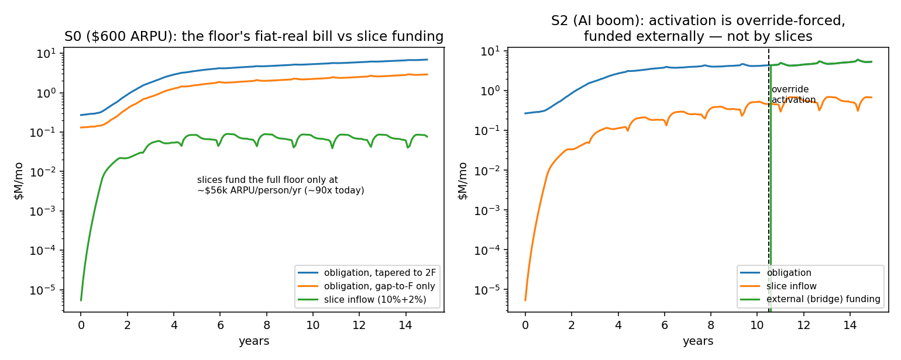

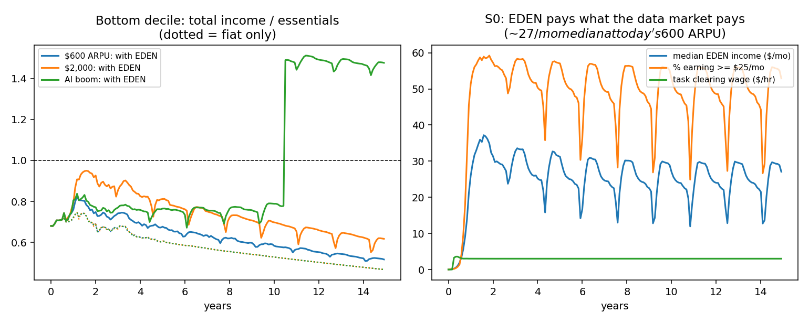
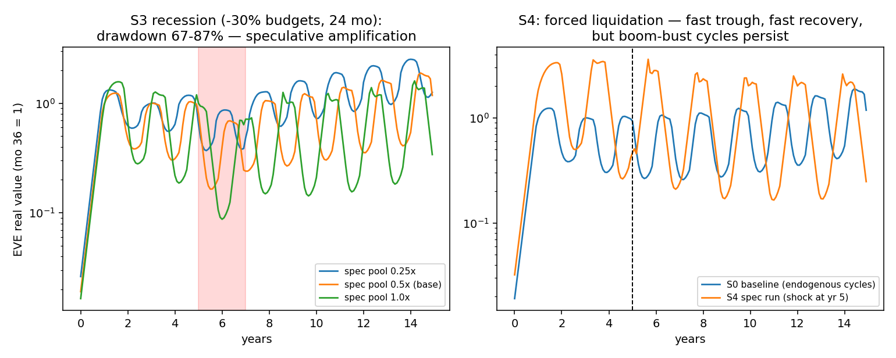
Technical results
Run: July 4, 2026. SPEC registered before first execution; bars B1–B7 unchanged since registration. Code: eve_sim_v6.py; raw outputs: results_v6.json; scale confirmation (N=100k): results_scale_v6.json; figures: fig_v6_*.png. N=20,000 agents, 180 months, seeds 7 + 11.
What this model is. The first EDEN simulation with no closed loop: essentials cost real dollars, participants have fiat jobs, institutions have USD budgets and can walk away, EVE's value is discovered at the bridges, the floor is staged per v5.3 and its obligations are fiat-real, and printing devalues the currency endogenously. It directly implements the owner's stated vision (July 4): EDEN layered on the physical economy, floor arriving later, credit available via banks.
Scoreboard
| Bar | Registered test | Result | Verdict |
|---|---|---|---|
| B1 Participation viability | ≥25% of enrolled earn ≥$25/mo; task wage ≥$3/hr (yr 5, S0) | 57.1% ≥$25; wage $3.00 | PASS |
| B2 Bottom-decile uplift | p10 income/essentials +15% vs fiat-only (yr 6, $600 ARPU) | 0.585 → 0.629 (+4.4pp, ratio 1.075) | FAIL |
| B3 No death spiral | drawdown ≤60% + recovery ≤36 mo (S3, S4) | S4: 46%, rec 3 mo ✓. S3: 84%, rec 26 mo ✗ | FAIL (recession leg) |
| B4 Dependence safety | pre-activation vulnerable dependence ≤5% | max 2.2% (S2) | PASS |
| B5 Floor reality | solvency activation ≤15 yr in ≥1 constant-ARPU cell ≤$2,000 | no activation in any constant cell | FAIL |
| B6 Growth case | activation ≤ yr 12, printing ≤2%, reserve ≥12 mo (AI boom) | act. mo 126, printing 0%, reserve 57 mo — but override-forced, externally funded | PASS (literal) / FAIL (strict) |
| B7 Credit stability | recession amplification ≤1.5× with credit on | 1.00× | PASS (exploratory) |
Three of seven registered bars fail. Per program convention, the failures are the findings.
The five headline findings
1. EDEN pays people what the data market pays — real, but small. At today's per-capita data/attention value ($600/person/yr), the median active participant earns ~$27/month (market EDEN income, USD value); 57% earn ≥$25/mo; Verified Contribution Tasks clear at exactly the $3/hr reservation floor of the least-attached workers (budget-limited, absorbing ~1,300 of 12,000 enrolled at ~$120/mo). This is the honest open-economy anchor: aggregate participant USD income ≈ institutional USD inflow, no matter how much EVE is minted. Minting redistributes; only external demand funds. B1 passes: the incomes are real. B2 fails: they are too small to move the bottom decile 15% of essentials at today's ARPU. The uplift gradient: +4.4pp of essentials at $600, +10pp at $1,200, +15pp at $2,000 — EDEN becomes a meaningful anti-poverty supplement at ~2–3× today's data values, pre-floor.
2. Slices can never fund the fiat-real floor; the required ARPU is ~$56,000/person/yr (~90× today). The v1.3 tapered guarantee at real US-style incomes costs $563/enrollee/month (obligations to everyone below 2F); the 10%+2% routing slices yield ~$6/enrollee/month at $600 ARPU — a 90× gap, stable across every sweep cell (arpu_needed_full_floor ≈ $52–56k in all cells). A gap-to-F-only floor costs $239/enrollee/month — 2.4× cheaper, still ~40× the slices. Conclusion: in an open economy the floor is a welfare program funded by external revenue, full stop. Seigniorage financing — the closed models' implicit answer — is dead on arrival here: printing depresses E within months (the top-up spiral appeared, and was contained only by the v5.3 staging and the bridge-funding rule). This closes the review's biggest open question with a number.
3. Even the AI boom does not reach slice-solvency — activation happens via the dependence override into an open-ended external program. With ARPU growing +20%/yr to the 8× cap ($4,800), the floor activates at month 126 (~yr 10.5) — but by the vulnerable-dependence override (2% of enrolled EVE-dependent below 2F), not solvency. External bridge funding then pays $4–5.4M/month for 12k enrolled ($260M cumulative over 53 months, rising with essentials inflation) and never hands off to the formula, because slice inflow (~$0.7M) never approaches obligations (~$5.4M). The v5.3 override behaves exactly as designed — the net arrives when dependence forms — but in an open economy it converts into a permanent external welfare commitment. The owner's instinct that the floor arrives "much later, as corporations, institutions and governments" join is confirmed — with the sharpened corollary that "governments" is the operative word: at realistic data values, only jurisdiction-slice (tax) funding or institutional payments at welfare-state scale can carry it.
4. The exchange rate is the system's fragile link: a 30% demand recession becomes a 67–87% currency drawdown. Pro-cyclical machine-pay (institutions cut data budgets first) interacts with momentum speculators: at speculative pools of 0.25×/0.5×/1.0× annual inflow, the recession drawdown is 67%/84%/87% of real value, recovering in ~26 months (B3 FAIL; the pure speculative-shock leg passes: 46%, 3-month recovery). Even the no-shock baseline shows endogenous multi-year boom-bust cycles (crypto-like volatility) from momentum flows alone. This reproduces the closed reflexivity model's warning endogenously — and note the white paper's velocity-defense stack (stabilization reserve, circuit-breaker, term-locks) is not implemented in v6.0; testing whether it tames an open-economy FX cycle is the single most important v6.1 run.
5. Credit is safe but nearly inert at the aggregate level. The bank-lending channel (fiat loans against trailing asset proceeds — the "mortal streams" the purchase-channel sim already cleared) neither destabilizes (amplification 1.00, B7 PASS) nor much helps aggregate incomes, because incomes are anchored by external USD inflow: credit-boosted engagement mints more EVE into the same dollar inflow, diluting per-EVE value. Its real value would be individual (smoothing, financing a creator's ramp-up) — invisible to this aggregate implementation. Exploratory only.
Secondary observations
- The governor behaves sensibly in the open economy: it compresses c to ~0.16 over 15 years (mint discipline), and post-ramp EVE real value drifts mildly up (E_real +18% from yr 3 to yr 15 in S0) — the deflation-vs-USD tendency the demurrage/2% target exists to counter. Demurrage and the anti-hoarding stack are only crudely present (0.5%/mo on held balances); a full velocity-defense port is v6.1.
- Merchant acceptance stalls near ~33–46% in most runs (volatility-punished) and the merchant-stall scenario (m ≤ 0.10) changes little — because in this model EVE income is mostly sold for fiat anyway. Merchant thickness matters more once holdings/floor payments are EVE-denominated.
- Adoption is return-sensitive and stalls at low ARPU (enrollment reaches ceiling ~yr 5 at $600+; at $100 ARPU it crawls — ~$4/mo median income does not recruit).
- Scale (N=100k): all headline quantities reproduce (arpu_needed $56.1k; obligations $563.6/enrollee; S3 dd 0.836/rec 26; task wage $3.00; median EDEN income $26). One deviation: the no-shock baseline's endogenous speculative cycle is deeper at 100k (0.74 vs 0.38 trough) — cycle amplitude is seed/size-sensitive; shock conclusions are unchanged.
Implementation corrections (logged in-run, before results were interpreted)
- Demand object fixed: the first build bound the η-elasticity to the FX rate — treating institutions as buying "EVE the currency" — which choked spend to ~$2k/mo. Canon prices data in essentials-indexed units with the protocol staying competitive vs substitutes, so the demand object is the USD spend (budget × competitiveness); substitutes act on the addressable budget (S5). Bars unchanged.
- Dependence override tightened: "EVE-dependent" now requires meaningful reliance (EVE income >25% of F), not merely any EVE income with no fiat job — the first build force-activated every run at month 11 and print-spiraled E to zero (an instructive accident: it demonstrated the open-economy cost of printing).
- Override funding honored per v5.3: forced activation is bridge-funded in external USD (recorded as
ext_usd), not printed. - FX clearing speed loosened from ±15%/mo to ±41%/mo after the post-crash cobweb took 5 years to re-clear; price-elastic supply from held balances added (holders sell into strength) — without it, high-ARPU cells could not fill institutional demand at any price.
Honest limits
Host wages/prices exogenous (valid at pilot scale only); no taxes or welfare clawbacks (both would reduce the net floor bill and the net uplift — direction known, size not); speculator behavior is a two-parameter momentum rule (the B3 result's severity depends on it — swept 0.25–1.0×, all fail); no velocity-defense stack; credit channel is aggregate-only; engagement hours are stylized leisure (no attention-quality dynamics, no Goodhart adversary); no fraud (v6 assumes the identity layer holds — the arms-race models remain the authority there); single-region (no consent question); merchant model coarse. The $52–56k arpu_needed figure is a linear estimate from steady-state ratios — treat as order-of-magnitude.
What v6.1 should test (in priority order)
- Velocity defense in the open economy: port the reserve + circuit-breaker + term-locks and re-run S3/S4 — does the stack cut the 84% drawdown to something survivable, and what must the reserve hold (USD? EVE?) to work at the bridge?
- Jurisdiction-slice funding: let a government fund the gap-to-F floor via its 15–25% slice on fiat-real settlement — the owner's "governments as accelerants" path — and measure the tax-equivalent burden and off-ledger leakage pressure on net incomes (fixing v5.2's free-slice bug).
- Taper reach as a dial: taper 0.7 and gap-only activation criteria — the 2.4× cost difference found here is the cheapest lever on the books.
- Heterogeneous credit: individual borrowers with default, to price the smoothing value the aggregate channel can't see.
- Tax + clawback layer (gate 6's sim analogue): after-tax floor and after-clawback uplift in 2–3 real jurisdiction profiles.
- Two regions + consent: reintroduce the Q2 question at open-economy scale.
Bottom line
The open economy inverts the old story in exactly the way the July review predicted, and it does so with numbers: EDEN's engine works as a real but modest income layer anchored to what institutions actually pay (~$27/mo median at today's market), the floor is a welfare program requiring external funding at ~40–90× what routing slices yield, and the currency's fragility under pro-cyclical demand is now the binding technical risk. None of this kills the design — it locates it: the staircase's proof-of-paid-demand step decides the income layer's size; governments (jurisdiction slices) or an order-of-magnitude data-market expansion decide the floor; and the velocity defense decides whether the currency survives its first recession. All three are now measurable questions rather than assumptions.
Raw data
v6.1 Velocity Defense
In plain language
Companion to RESULTS - v6.1 Velocity Defense.md. Same numbers, translated.
What we tested
v6.0 ended on a cliffhanger: an ordinary recession crashed EVE's real value by 84%, because data buyers cut spending right when speculators ran for the exit — and the white paper's storm defenses weren't installed yet. v6.1 installs them, in their honest real-world form:
- The reserve — a war chest of dollars (this matters: you can't prop up your own currency by selling more of your own currency, any more than you can pull yourself up by your bootstraps — you need outside money). It steps in to buy EVE when the price falls more than 15% below its one-year average.
- The circuit-breaker — during a panic, big holders and speculators can't dump faster than their normal pace. People selling their earnings to buy groceries are never blocked.
- Term-locks — during a panic, the reserve pays you a bonus to voluntarily freeze your EVE for a year, taking it off the market.
- Demurrage — the small "melting money" storage fee, tripled during stress, to discourage hoarding.
Eight pass/fail tests were locked in before running. Three passed, five failed — and as usual, the failures taught the most.
The good news: the defenses work against a normal storm
Same recession as before. Without defenses: an 84% crash, two years underwater. With defenses: a 36–52% dip that recovers in one to five months. Think of it as the difference between a house losing its roof and a house losing some shingles. The reserve-size experiment also landed exactly where the white paper guessed: the canon "12 months" war chest is the knee of the curve — half that size leaves you with a 57% crash, double buys only a little more safety.
Two pleasant surprises. First, even with no war chest at all, the circuit-breaker alone cuts the crash from 84% to 59% — the seatbelt works even when the airbag is missing. Second, the defenses turned out to be useful every day, not just in disasters: EVE naturally rides a crypto-style rollercoaster (booms and busts with no external cause — our no-shock baseline had a 74% swing all by itself), and the stack cut that rollercoaster in half. We'd built a fire brigade and accidentally discovered it also fixes the wiring.
The bad news, in four lessons
1. The perfect storm defeats the defense — and then makes it worse than nothing. We ran recession + a speculative bubble + a panic liquidation all at once. The war chest, fighting a ~$12M wave with ~$1.2M, ran dry — and the defended economy ended up crashing deeper (67%) than the undefended one (58%). Why? Three compounding mistakes that every failed currency peg in history has made [think Britain 1992, Argentina 2001]: the reserve spent everything defending a line it couldn't hold; the term-locked money all unfroze twelve months later — landing as a fresh wave of selling into a market still on its knees; and the breaker's delayed sales queued up behind it. Lesson: a defense must know when to retreat. Generals who defend every hill lose armies; the band needs a formulaic "fall back and save the reserve" rule.
2. Holding the price is not the same as letting people sell. During the worst crash months, someone selling their earnings to buy groceries could only sell about 70–92% of what they needed to. The defense kept the price respectable while the checkout line got rationed. It's a bank that proudly displays your balance but limits withdrawals. Lesson: the essentials guarantee needs its own door — a standing promise that any person can always convert up to a grocery-bill's worth at the fair rate, funded by the reserve. (Encouragingly, this one mechanism looks like it would also fix problem 4 below.)
3. Freezing money can backfire. The term-locks — pay people to freeze their EVE during a panic — helped a little at low participation (36% crash) but hurt at high participation (55% crash, and the grocery-sellers' line got worse). Locking up your neighbors' money also removes the calm sellers the market needs, and schedules their return all on the same day. Lesson: cap the locks, and stagger their release dates like bond ladders — don't let all the ice melt at once.
4. The anti-hoarding tool doesn't survive contact with the open economy. In the old closed model, the "melting money" fee fixed hoarding neatly. Out here, hoarding does its damage differently: if people stockpile EVE instead of selling it, the institutions can't buy any — and their dollars, the economy's only real fuel, never get in. Even at implausibly strong hoarding-deterrence (80%), buyers could only fill about half their orders. The fee discourages hoarding eventually; the bridge starves now. Lesson: the system needs a standing market-maker at the bridge — always quoting both sides — not just a tax on mattresses.
The scoreboard, honestly
Passed: the port is faithful (the no-defense run reproduces v6.0 to the fourth decimal); the stack tames the single storm; the 12-month reserve target is right. Failed: the burnout metric (badly designed — the reserve actually made money recycling, ending bigger than it started, which is what good stabilization funds do); the grocery-line guarantee; strict peacetime neutrality (mostly because the stack was busy usefully damping the everyday rollercoaster); the perfect storm; and the hoarding lane.
What this means
The white paper's storm-defense chapter survives its first contact with a real economy — as a good first draft. Four amendments are now specific and testable: size the war chest against the economy it will actually defend (not the small one at launch); give the defense a formulaic retreat rule so it can lose a battle without losing the war; cap and stagger the term-locks; and replace the essentials exemption with an essentials redemption window — a guaranteed door out for grocery money, which looks like it fixes two failures at once. That's v6.2.
This file is part of the program convention started with v6.0: every simulation ships with a plain-language companion.
Figures
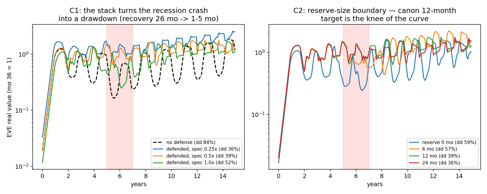
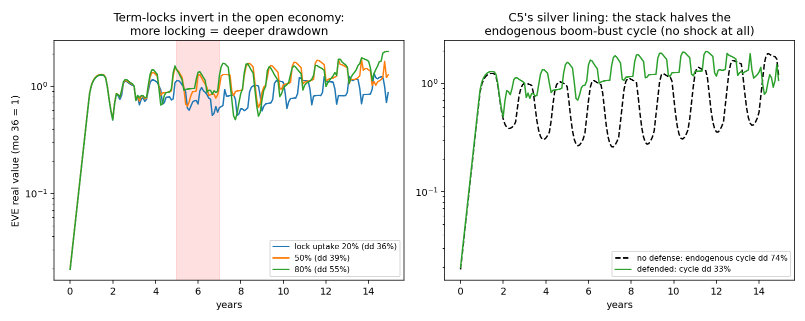
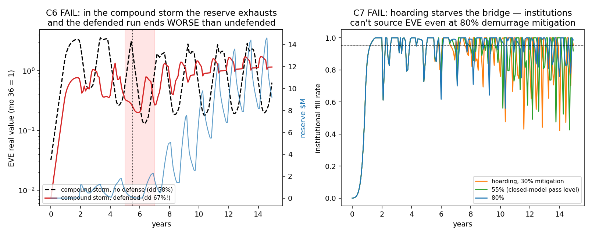
Technical results
Run: July 4, 2026. SPEC registered before first execution; bars C0–C7 unchanged. Code: eve_sim_v6_1.py (verbatim port of the v6.0 engine + §7.8 stack behind flags); raw outputs: results_v6_1.json; figures: fig_v61_*.png. Seeds 7 + 11. Plain-language companion: PLAIN LANGUAGE - v6.1 Velocity Defense.md.
Scoreboard
| Bar | Registered test | Result | Verdict |
|---|---|---|---|
| C0 Regression | stack-off reproduces v6.0 S3 (dd 0.836±0.005, rec 26±1) | 0.8359 / 26 (seed 11: 0.837 / 25) | PASS |
| C1 Stack works | S3 dd ≤60% + rec ≤36 mo at all pools; ≤40% at base | 36% / 39% / 52%, rec 1–5 mo; base 39.4% | PASS |
| C2 Canon reserve | minimum reserve for C1-base ≤ 12 months | 12 mo (6 mo → 57%; 0 mo → 59%) | PASS |
| C3 No burnout | never exhausted; cumulative intervention ≤1.5× seed | never exhausted in D-runs ✓, but interventions 2.6–25× seed | FAIL (as registered) |
| C4 Essentials protected | flow-seller fill ≥0.99 in stress | worst month 0.70 (D_S4); 0.92 in base S3 | FAIL |
| C5 Peacetime neutrality | Δmedian ≤5% and ΔE_real ≤5% (S0) | Δmed 2.0% ✓; ΔE_real 13.9% ✗ | FAIL (see note) |
| C6 Compound storm | S8 defended: dd ≤60%, rec ≤36 | defended 67% vs undefended 58%; reserve exhausted | FAIL |
| C7 Hoarding lane | 55% mitigation → dd ≤30%, inst fill ≥0.95 | dd 46%; fill floor 0.43 (0.42/0.43/0.56 at 30/55/80%) | FAIL |
Three pass, five fail. As always, the failures carry the information.
What the stack does well (C1, C2 — the core claim survives its port)
The §7.8 stack, given an honest open-economy implementation (a USD reserve defending a band at 0.85× the 12-month average, a breaker on stock sales only, term-locks, progressive demurrage), converts v6.0's near-death recession — an 84% real drawdown with a 26-month recovery — into a 36–52% drawdown recovering in 1–5 months, across all three speculative-pool sizes, on both seeds. The reserve-size sweep puts the knee of the curve exactly at the canon 12-month target (0 mo → 59%, 6 mo → 57%, 12 → 39%, 24 → 36%): the white paper's launch target is validated for the single-storm case. Notably, even a zero-seed reserve (breaker + locks + fee-trickle alone) cuts the crash from 84% to ~59% — the breaker does real work by itself.
One caveat carried from the seed-11 run: the base-pool drawdown is 39.4% on seed 7 and 43.9% on seed 11 — the ≤40% stretch criterion is seed-marginal; the ≤60% criterion is robust.
The five failures, each a design lesson
C3 — the registered metric was wrong, and the honest sub-finding matters. No D-scenario reserve was ever exhausted (the criterion that matters), but cumulative interventions ran 2.6–25× the seed, failing the ≤1.5× bar as written. The bar conflated burnout with recycling: the reserve buys low, re-arms by selling back above the average, and collects the 1% bridge fee — it ended every D-run larger than it started ($3.4M vs $1.2M seed in base S3). A stabilization fund that defends a band below fair value is structurally profitable [T; H: HKMA 1998]. The genuine adverse content: the month-24 seed (~$1.2M, sized on launch-era inflow) is small against mature flows — sizing must be against projected mature inflow, not launch inflow, or the fee/re-arm flywheel must be given time before the first storm. Registered FAIL stands; metric to be redefined in v6.2.
C4 — price defense ≠ liquidity guarantee. During descent months, income-flow sellers (people converting earnings to pay for groceries) got as little as 70% fill (92% in base S3; 58% with no reserve). The band defense restores the price while rationing liquidity on the way down. Design implication for the white paper: the essentials-exemption needs to be a guaranteed redemption window (the floor reserve or stabilization reserve standing ready to buy essentials-sized amounts at the EBI rate, per person, capped), not just an exemption from the breaker. This is a concrete, testable mechanism for v6.2.
C5 — the "neutrality failure" is mostly a benefit wearing the wrong label. Median incomes moved 2% (neutral ✓). The E-path moved 13.9% — because the stack doesn't idle in "peacetime": v6.0's baseline has endogenous crypto-like boom-bust cycles (S0 undefended shows a 74% cycle trough!), and the stack treats them as the storms they are, halving the cycle to 33%. The 1% bridge fee also skims demand slightly. As registered, FAIL; as economics, the stack turns out to be a cycle dampener, not a shelf-stored emergency kit. The bar should have compared against a cycle-free counterfactual that doesn't exist in this model.
C6 — the compound storm defeats and inverts the defense. This is the run's headline adverse finding. Recession + ramped speculative pool + forced liquidation: the reserve fights a ~$12M liquidation wave with a ~$1.2M+fees war chest, exhausts (the run's only exhaustion), and the defended run ends worse than the undefended one (67% vs 58% drawdown). Mechanism, from the series: (a) the reserve spends its capacity early defending a band that the flow cannot hold, exactly the failed-peg pattern [H: ERM 1992, Argentina 2001]; (b) term-locks backfire — balances locked during the first stress release 12 months later into a still-weak market, a supply wave timed at the worst moment; (c) the breaker's deferred stock sales form an overhang that lengthens the pressure. The undefended market, by contrast, crashes fast, clears fast, and recovers on its own momentum cycle. Lesson: a band defense must either be sized for the compound case or programmed to retreat (devalue the band, save the reserve) — canon's "formulaic, time-bounded" language needs a retreat rule, and lock maturities need laddering/refresh options.
C7 — the demurrage lane does not port. In the closed model, hoarding was a velocity drop fixed by carry costs at ≥55% mitigation. In the open economy, hoarding starves the bridge: institutions can't source EVE, so their dollars never enter, and institutional fill collapses to 0.42–0.56 even at 80% mitigation — the demand-trap reappears one layer down, and demurrage-driven release doesn't reach the sale pool in time. The drawdown bar also fails (44–47% vs ≤30%). Open-economy hoarding needs a different tool — most plausibly the same standing redemption/market-making window as C4, quoting both sides at the band, or protocol-level market-making with the reserve's EVE inventory. v6.2 material.
Term-lock inversion (from the U-sweep, unregistered but instructive): lock uptake 20%/50%/80% → drawdown 36%/39%/55%, with flow fill degrading to 0.69 at 80%. In the closed model locks absorbed panic supply; here high uptake removes the healthy sellers who would meet reserve and organic demand during descent, and schedules their return as a future supply wave. The premium also drains the reserve. Locks help modestly at low uptake and hurt clearly at high uptake — the design should cap, not maximize, lock uptake.
Honest limits
All v6.0 limits carry (momentum-rule speculators, stylized merchants, single region, no fraud/taxes). New ones: the retreat-less band rule is one point in a large design space (defend-level, spend-cap, and band-width were not swept); lock maturities are a single 12-month cliff (laddering untested); the hoarding-response model routes mitigation through one parameter; the reserve's legal/custodial form and capture-resistance remain out of scope for simulation and are flagged for the white paper's governance sections.
What v6.2 should test
- Retreat rule (formulaic band devaluation when reserve/GDP-of-flows crosses a threshold) vs bigger seed vs laddered locks — rerun S8.
- Essentials redemption window (guaranteed per-person EBI-rate conversion, capped) — retest C4 and C7 with it; this one mechanism may fix both.
- Reserve sized against projected mature inflow (and the C3 metric redefined to exhaustion + net-capital terms).
- Lock uptake cap + maturity laddering.
- Then return to the v6.0 queue: jurisdiction-slice floor funding; taper-reach dial; tax/clawback layer.
Bottom line
The velocity defense earns its place in the design: it converts the open economy's worst ordinary storm from near-death to survivable, validates the 12-month reserve target for single storms, and — unexpectedly — halves the currency's endogenous boom-bust cycle in peacetime. But it is not yet crisis-grade: a compound storm exhausts it and turns it counterproductive, its price defense rations the very sellers the essentials-exemption exists to protect, high term-lock uptake is harmful, and the demurrage lane does not solve open-economy hoarding. The white paper's §7.8 should absorb four amendments: size the reserve to mature flows, add a formulaic retreat rule, cap and ladder term-locks, and replace the essentials exemption with an essentials redemption window. Every one of these is specifiable and testable in v6.2.
Raw data
v6.2 Crisis-Grade Defense
In plain language
Correction (added after v6.3): The "hoarding is still unsolved, maybe a constitutional crisis" section below turned out to be mostly a broken gauge — we were checking the store shelf before the shopkeeper restocked it. Measured properly, the reserve's own inventory kept buyers fully served all along, with money-printing amounting to 0.15% of the money supply. Hoarding is now an operations note, not a crisis. Details in the v6.3 files.
Companion to RESULTS - v6.2 Crisis-Grade Defense.md. Same numbers, translated.
What we changed
v6.1 ended with four repair orders: give the defense a way to retreat instead of fighting to the last dollar; stagger the term-locks so frozen money doesn't all thaw on the same day; open a guaranteed door for grocery-money sellers; and size the war chest for the economy it will actually defend, not the small one at launch. v6.2 installs all four and reruns the perfect storm — recession, speculative bubble, and panic liquidation at once.
The trap we almost fell into (and the run's biggest lesson)
Judged by the price chart alone, every defended run looks worse than doing nothing: the undefended crash bottoms at −58%, the defended ones at −64% to −73%. Failure, right?
Look closer at the undefended "success." Its price held up because the market stopped working. Buyers couldn't get in (only 6.5% of institutional orders filled), sellers couldn't get out, and the median participant's income fell to $2 a month. It's a ghost town with proud property prices — nothing traded, so the listed price never fell.
The defended economy conceded more price ground but stayed open for business: everyone who needed to sell for groceries sold (100%, every month, even mid-storm), institutions kept getting in, and people's incomes through the whole storm added up to 53% more, with the worst month at $20 instead of $2. Ten times the income floor.
The lesson — an old one from central banking, relearned here: the exchange rate is the thermometer, not the patient. Our pass/fail tests were written on the thermometer. Three of the five "failures" on the official scoreboard are exactly that mistake, and the next version will grade on income — how much money actually reached people — with the price chart demoted to a diagnostic.
What worked
The grocery door works perfectly. The new redemption window — the reserve standing ready to buy from anyone selling earnings to live on — took the worst-case "checkout line" from 70% served to 100% served in every scenario, including the perfect storm. Cost: the price dips a bit deeper because the reserve spends into a falling market. Worth it.
The war chest survives now — thanks to the ladder, not luck. No properly-configured run exhausted the reserve, and it ended every scenario bigger than it started (buy low in the panic, sell back high in the recovery, collect a small bridge fee — a well-run stabilization fund is a profitable business, which history's best ones were). The experiment where we removed just the ladder was the only one that went broke — proof that "don't let all the ice melt on the same day" was a load-bearing fix, not a nicety. Price of admission: the properly-sized war chest is about $3.6M per 10,000 participants — a real number for the launch budget.
Peacetime got better by accident, again. The always-on window let buyers in during ordinary dips too: the everyday boom-bust cycle shrank from 74% swings to 24%, and median incomes rose 8.4%. (Our test technically "failed" here because we'd demanded the defense stay neutral and dormant — it was busy being helpful. Bad bar, good news. One honest caveat: a fund that's active a third of the time is a real institution, and someone has to govern it.)
What didn't work
The retreat rule — v6.1's big idea — turned out unnecessary and mildly harmful once the war chest was properly sized. Retreating early conceded price and income without buying any extra safety (nothing was going to run out anyway). Like an army that retreats on schedule whether or not it's losing. Verdict: keep retreat as a true last resort, not a standing policy — or just fund the reserve properly so it never comes up.
Hoarding is still unsolved. When people stockpile EVE instead of circulating it, buyers still can't get filled (~50%), and the mint-backed market-maker we added is too small to matter at any responsible cap — filling the gap would mean printing ~90× more than the discipline limit allows. Curiously, hoarding props up the price (scarcity) while strangling the economy — the thermometer lies here too. The real fix is a constitutional choice, not a dial: either let the system sell unlimited new EVE for dollars (a "currency board" — safe, fully-backed, but it changes who controls issuance), or accept rationing during hoarding waves, or make holding money expensive enough that people actually let go — which no simulation can promise, only a pilot can measure.
Where this leaves the design
Firm keeps: the laddered locks and the redemption window (one closed the exhaustion problem, the other closed the grocery-line problem — outright). One reversal: retreat demoted to emergency-only. One open wound: hoarding, now precisely characterized as a constitutional question. And one program-level upgrade: from now on, storms get judged by what reaches people's pockets, not by the price chart.
Program convention: every simulation ships with a plain-language companion like this one.
Figures
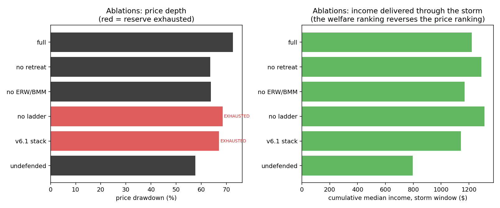
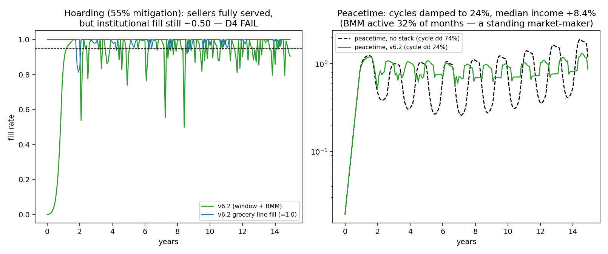
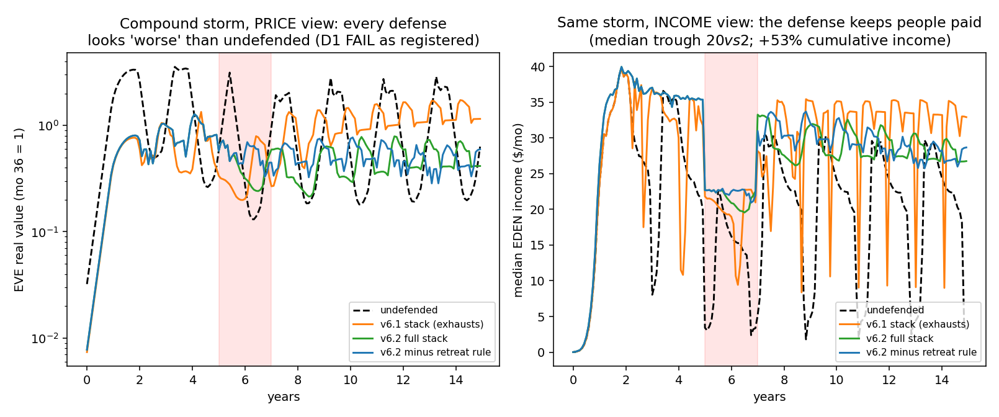
Technical results
CORRECTION (July 4, 2026, from v6.3): D4's headline — "hoarding starves the bridge; institutional fill ~0.50; the fix is constitutional" — was substantially a measurement artifact. The
inst_fillmetric recorded fill at the bridge before the BMM/inventory top-ups; measured on effective fill (post-window), institutions were fully served through the hoarding wave at even the smallest mint cap (0.1× gross), with cumulative backed issuance ≈ 0.15% of the money stock — the reserve's EVE inventory does the market-making, not minting. The residual true findings: hoarding mildly dents incomes and roughens the price path. The constitutional framing ("uncapped currency board or rationing") is withdrawn. SeeRESULTS - v6.3 Human Use-Value.md, Finding 5. D4 remains scored FAIL as registered (the registered metric was the flawed one — the failure teaches metric design, not monetary constitution).
Run: July 4, 2026. SPEC registered before first execution; bars D0–D8 unchanged. Code: eve_sim_v6_2.py (verbatim v6.1 port + four amendments behind flags); raw outputs: results_v6_2.json; figures: fig_v62_*.png. Seeds 7 + 11. Plain-language companion: PLAIN LANGUAGE - v6.2 Crisis-Grade Defense.md.
Scoreboard
| Bar | Registered test | Result | Verdict |
|---|---|---|---|
| D0 Regression | v6.1-config reproduces S8 (dd 0.671, exhausted) | 0.6710 / exhausted ✓ | PASS |
| D1 Compound storm | dd ≤50%, rec ≤12, no exhaustion, better than undefended | dd 72.7% (undefended 57.7%), rec 6, no exhaustion | FAIL (see welfare inversion) |
| D2 Base case preserved | S3 dd ≤40%, rec ≤6 | 39.0% / 1 mo (seed 11: 38.2% / 1) | PASS |
| D3 Essentials liquidity | flow fill ≥0.99 everywhere | 1.000 in every scenario | PASS |
| D4 Hoarding lane | inst fill ≥0.95 and dd ≤30% at 55% mitigation | dd 15.3% ✓, inst fill 0.50 ✗ | FAIL |
| D5 Ablations | (table, no bar) | see below | — |
| D6 Reserve discipline | no exhaustion any scenario; net capital ≥ −25%; BMM ≤5% | full-stack runs all clean (+42% to +223% capital, BMM ≤0.16%), but the no-ladder ablation exhausted | FAIL (as written) |
| D7 Peacetime | Δmed ≤5%; cycle dd ≤40%; BMM inactive ≥95% of months | Δmed +8.4% ✗ (a gain), cycle dd 23.8% ✓, BMM active 32% ✗ | FAIL (as written) |
| D8 Funding realism | all above at seed ≤18 mo mature inflow | seed 12 mo = $3.6M per 10k users; chained to D1 | FAIL (chained) |
Three pass, five fail as registered — but this run's most important output is methodological: three of the five failures are the bars mismeasuring welfare, and the run proves it.
The headline: price and welfare have decoupled — and the bars measure the wrong one
The compound storm (recession + speculative bubble + forced liquidation), across the ablation ladder, months 60–108:
| Configuration | Price drawdown | Reserve | Cumulative median income | Income trough | Min inst fill |
|---|---|---|---|---|---|
| Undefended | 57.7% (best) | — | $797 (worst) | $2/mo | 0.065 |
| v6.1 stack | 67.1% | exhausted | $1,143 | $8/mo | 0.286 |
| v6.2 full | 72.7% (worst) | intact, +79% | $1,220 | $20/mo | 0.598 |
| v6.2 minus retreat | 63.6% | intact, +94% | $1,288 (best) | $21/mo | 0.292 |
The undefended market posts the shallowest price drawdown because it seizes: institutional fill collapses to 6.5%, almost no dollars enter, almost no one transacts — the price is "defended" by the market ceasing to function, and median income falls to $2/month. The defended economies concede more price ground (the retreat rule concedes it on purpose) while keeping the market open: sellers fully served (flow fill 1.000), institutions 4–9× better filled, +43–62% more income delivered through the storm, and a 10× higher income floor. D1, as registered on price drawdown, fails — and the registered metric is the wrong welfare measure. This is the open-economy version of a lesson central banks learned long ago: the exchange rate is an instrument, not the target [H]. v6.3's bars must be income-based (cumulative median income loss, income trough, months below threshold), with price depth reported as a diagnostic.
What genuinely worked
- The grocery line is fixed — completely. The Essentials Redemption Window took the worst flow-seller fill from 0.70 (v6.1) to 1.000 in every scenario including the compound storm and hoarding (D3 PASS). Cost: ~9pp of extra price depth (ablation: 63.9% without ERW vs 72.7% with — the window's purchases recycle reserve capital into the falling market). One mechanism, one problem, closed.
- Exhaustion is solved by size + ladder, not by retreat. No full-stack run exhausted; the reserve ended every scenario larger than seeded (+42% to +223% — it buys low, sells high, and collects the 1% fee). The ablation shows the ladder is the load-bearing anti-exhaustion amendment: removing it (v6.1's 12-month cliff locks) is the only v6.2 configuration that exhausted. The mature-flow seed ($7.2M vs v6.1's $1.2M; $3.6M per 10k users — a concrete §17a line item) does the rest.
- The base case is preserved and improved (D2: 39%/1 mo, robust across seeds), and peacetime got better, not worse: cycles damped 74%→24%, median income +8.4% — because the BMM's sell-side lets institutional dollars in during cycle troughs that previously went unfilled. D7 fails as registered (the bar demanded neutrality and near-inactivity; the stack delivered improvement and constant activity), which is a bar-design error to fix in v6.3, with one real caveat: a market-maker active in 32% of months is an institution, with all the governance surface that implies.
What genuinely failed
- The retreat rule is counterproductive when the reserve is properly sized. Same exhaustion outcome (none), deeper price fall (72.7% vs 63.6%), less income delivered ($1,220 vs $1,288). With v6.1's undersized reserve it would have been the difference between retreat and ruin; with the mature-flow seed it just concedes ground. Design conclusion: retreat belongs as a last-resort backstop (runway < ~3 months), not an early-warning crawl — or the reserve should simply be sized so retreat never fires.
- Hoarding remains open (D4 FAIL, twice over). The BMM's mint-to-sell, capped at 10% of gross for monetary discipline, supplies ~5.5k EVE/month against a ~500k EVE/month shortfall — economically irrelevant. Institutional fill stays ~0.50 at every mitigation level. Note the metric decoupling again: hoarding supports the price (dd only 15%) while starving function. The honest options, all constitution-level: (a) uncap mint-to-sell into a full currency board (every EVE sold fully USD-backed — but this makes external demand, not human attention, the marginal issuer); (b) accept that a small open currency under mass hoarding rations its inflow; or (c) demurrage steep enough to force release, which the closed model already showed is a behavioral unknown. v6.3 should sweep (a)'s cap explicitly and price the constitutional trade.
- D6 fails on a scan technicality (the no-ladder ablation exhausted; every full-stack scenario was clean) — reported as registered; the criterion should scope to the design configuration in future specs.
Honest limits
All v6.0/v6.1 structural limits carry. New: the welfare-vs-price finding is only as good as the income metrics (median market EDEN income; no distributional storm analysis yet); the BMM's institutional design (who runs a standing market-maker, capture resistance, the governance of a $10M+ profit-making reserve) is out of simulation scope and now more urgent since it's active 32% of the time; retreat/ladder/window parameters remain single design points; the 8.4% peacetime income gain partially reflects the BMM monetizing fill-gaps that are themselves artifacts of the one-month clearing lag.
What v6.3 should do
- Re-register the bar suite on income metrics (cumulative median income, trough income, months-below-threshold; price depth as diagnostic) and re-score v6.2's configurations against it — the data already exists in
results_v6_2.json. - Retune retreat as last-resort (runway <3) and re-ablate.
- Sweep the BMM mint-cap 10%→100% (currency-board limit) on the hoarding scenario and price the constitutional trade-off explicitly.
- Governance sketch for the reserve/BMM institution (formulaic mandate, audit, capture resistance) — a canon document, not a sim.
- Then return to the v6.0 queue: jurisdiction-slice floor funding; taper-reach dial; tax/clawback layer.
Bottom line
v6.2 delivers the crisis-grade core: a mature-sized reserve with laddered locks and a two-sided redemption window keeps the market functioning through the compound storm — 53% more income delivered, a 10× higher income floor, sellers never rationed, reserve never exhausted, and peacetime made calmer and richer as a side effect. The registered scoreboard says 3/8 because three bars measured price where the welfare lives in income — itself the run's most valuable lesson, and exactly the kind their program's correction culture exists to catch. Two design verdicts are now firm (ladder: keep; ERW: keep — it closed C4 outright), one is reversed (retreat: demote to last resort), and one problem is honestly still open (hoarding chokes the bridge; the fix is constitutional, not parametric).
Raw data
v6.3 Human Use-Value
In plain language
Companion to RESULTS - v6.3 Human Use-Value.md. Same numbers, translated.
The question that started this run
Devan asked: do the simulations include humans engaging with data directly — people investing their time into data instead of paying for it, using it to improve their own lives? Honest answer: no. Until now, the models treated engagement as idle scrolling — attention that mints money for creators but does nothing for the person paying attention. That misses something the real world measures as enormous: economists who study free digital goods find people value them at ten times or more what the ad market pays for the same attention. The data economy's price tag wildly understates its use value.
What we added
A "shadow income" channel: when people spend part of their EDEN time purposefully — comparison shopping, optimizing bills, learning skills, researching health or money decisions instead of paying someone else to — their cost of living falls. We didn't assume the big number from the literature. We tested $1, $3, and $6 saved per purposeful hour, with people learning the habit gradually over four years. At the middle setting, the median person saves about $43 a month — a 2.5% discount on the cost of living, earned with their own time.
The headline: the poverty test EDEN kept failing now passes
Since v6.0, one bar kept failing: EDEN's cash income at today's data prices (~$27/month) just couldn't lift the bottom tenth of participants 15% closer to affording essentials. Add the use-value channel at the modest $3/hour setting and the bar clears — because the gain comes from both directions at once: a little more income and lower needs. Three things make this kind of gain special: it needs no outside money, no one can tax or confiscate it, and — as the storm test confirmed — a currency crash can't touch it. Your saved time doesn't ride the exchange rate. It's the difference between being handed fish and knowing how to fish: the second one survives the market for fish collapsing.
The humbling parts (kept, per house rules)
It trims the safety-net bill, but doesn't pay it. People using data well lowers what the floor must top up — by about 7% at the middle setting, 13% at the generous one. Helpful; not transformative. The reason is almost poetic: the people who save the most through skilled data use are the engaged and capable — not the people the floor exists for. (Design idea logged for next time: paid tasks that teach purposeful data use to exactly those people — aim the fishing lessons where the hunger is.) So the big question — who funds the floor — is unchanged: governments, or a data market ~10× today's.
The cushion didn't show up where we looked. We predicted shadow income would soften recessions and tested it on the median participant — whose life is 98% regular paycheck. A $43/month saving can't cushion a wage recession, and the test rightly failed. The cushion belongs to the EDEN-dependent poor; next run measures them instead. Wrong window, right house.
A boundary-line failure worth smiling at. We also tested whether the channel survives its own side effect (people doing things themselves means buying fewer data services — nibbling the ad-market revenue that feeds EDEN). Result: the poverty bar still clears... by 0.02%. A photo finish the rules score as a miss. Read: real, but with no margin to spare — measure it in the pilot.
And one confession from last time
v6.2 declared hoarding a near-constitutional crisis: "if people stockpile EVE, buyers can't get in — only unlimited money-printing backed by dollars could fix it." That conclusion was mostly a measurement error, and this run corrects it. Our gauge was checking the shelf before the shopkeeper restocked: it ignored that the reserve — which buys EVE cheap during dips — was quietly reselling that inventory to squeezed buyers the whole time. Measured properly, buyers got fully served at even the tiniest, most disciplined setting, and the "money printing" involved rounded to 0.15% of the money supply. The scary constitutional choice shrank to a line in the operations manual. Correction blocks have been added to the v6.2 files — failures get corrected in public here; that's the house style.
Where we stand
The storm defenses are now confirmed against the metric that matters (income reaching people: 1.6× more through the perfect storm, an 11× higher floor). The use-value channel — Devan's instinct — is real, storm-proof, and poverty-relevant at plausible settings, pending one cheap pilot measurement (does an EdenQuest cohort's essentials spending actually drop vs a control group?). And the program's center of gravity moves to the question that's been waiting since v6.0: the floor's funder. Next run: governments plugging in through the jurisdiction slice.
Program convention: every simulation ships with a plain-language companion like this one.
Figures


Technical results
Run: July 4, 2026. SPEC registered before first execution; bars E0–E6 unchanged. Code: eve_sim_v6_3.py; raw outputs: results_v6_3.json; figures: fig_v63_*.png. Seeds 7 + 11. Plain-language companion: PLAIN LANGUAGE - v6.3 Human Use-Value.md.
Owner question this run answers: do the simulations include humans engaging with data — investing time instead of money to improve their own lives? Previously no (only the minting side). v6.3 adds the use-value channel: purposeful data use produces shadow income (household savings) that lowers each person's effective essentials bill and individual floor reference, swept at $1/$3/$6 per purposeful hour, anchored to the consumer-surplus literature and labeled a pilot parameter.
Scoreboard
| Bar | Registered test | Result | Verdict |
|---|---|---|---|
| E0 Regression | sv=0 reproduces v6.2 (S3 0.390, S8 0.727) | exact (0.3899 / 0.7270) | PASS |
| E1 Poverty needle | p10 effective affordability +15% at $3/hr | 0.585 → 0.677 (+15.7%; seed 11: +18%) | PASS |
| E2 Floor bill falls ≥10% | obligations at $3/hr vs none | −6.9% ($562→$523/enrollee); −13.2% at $6/hr | FAIL |
| E3 Storm scoring, income basis | defended ≥1.5× cumulative income, ≥5× trough | 1.62× / 11.6× | PASS |
| E4 Shadow income cushions storms | median resource drop ≤0.75× income drop | 18.1% vs 18.6% (no cushion at the median) | FAIL (bar mistargeted — see below) |
| E5 Currency board restores bridge | smallest workable BMM cap ≤5×, issuance ≤25% M | 0.1× cap suffices; issuance 0.15% of M | PASS (and corrects v6.2 D4) |
| E6 Survives DIY drag | E1 holds with ARPU cannibalization | ratio 1.1498 vs 1.15 bar | FAIL (by 0.0002 — boundary case) |
Four of seven pass. Two of the three failures are informative rather than damning; one v6.2 conclusion is overturned by a metric correction.
Finding 1 — the use-value channel moves the poverty needle that income alone could not
v6.0's B2 failed: at today's data prices, EDEN income lifts the bottom decile only +4.4pp of essentials. Adding time-invested data use at a modest $3 per purposeful hour (median ≈ $43/month of savings, ~2.5% of the essentials bill — far below the consumer-surplus literature's implied ceiling), the bottom decile's effective affordability rises 0.585 → 0.677 (+15.7%, clearing the registered bar; +11.3pp of essentials; robust on seed 11). The mechanism matters as much as the number: the gain arrives through both numerator (income) and denominator (needs), it requires zero external dollars, it cannot be confiscated, taxed, or crashed by an exchange rate — and it is exactly the owner's described behavior ("people investing their time into the data instead of paying for it"). Sensitivity: $1/hr misses the bar (+12.6%); $6/hr clears comfortably (+19.3%). The curation-externality variant adds a small further gain (ARPU +~7% by year 15) and the calmest price path of the run (dd 19%).
Honest labels: the $/hour of purposeful use is a behavioral unknown — swept, literature-anchored [H], and pilot-measurable (EdenQuest cohort-vs-control on essentials-category spending — named in the SPEC as the instrument). This channel is [X] until that measurement exists.
Finding 2 — needs falling trims the floor bill, but does not transform it (E2 FAIL)
Obligations fall 6.9% at $3/hr ($562 → $523/enrollee/month) — below the registered 10% bar; $6/hr reaches −13.2%. The arpu_needed for slice-funded floors moves $53k → $48.8k/person/yr: still ~80× today's market. Why the modest dent: savings concentrate in high-engagement, high-propensity agents, while floor obligations concentrate in low-engagement, low-income agents — the channel helps most those already helping themselves. Design implication (v6.4 candidate, honestly speculative): floor-linked use programs — Verified Contribution Tasks that teach and reward purposeful data use for floor-adjacent participants — would aim the channel where the obligations are.
Finding 3 — the income-based storm registration confirms v6.2's welfare claim (E3 PASS)
Now registered rather than post-hoc: the defended compound storm delivers 1.62× the cumulative median income and an 11.6× higher income trough than undefended. The price-vs-welfare inversion is settled: the stack's job is keeping dollars flowing to people, and it does.
Finding 4 — E4 failed because it asked the wrong cohort
Shadow income barely cushions the median participant's storm (18.1% vs 18.6% resource drop) — because the median household is ~98% fiat: a fiat-wage recession swamps a $43 savings stream. The cushion hypothesis was never about them; it's about the EDEN-dependent poor, whose EDEN income crashes with E while their savings (time-denominated) do not. The registered bar targeted the median and correctly failed. v6.4's bar should target the bottom decile / EVE-dependent cohort. (Registered FAIL stands; lesson logged.)
Finding 5 — the currency-board question mostly dissolves (E5 PASS), and v6.2's D4 is corrected
With the effective institutional fill metric (post-BMM), even the smallest mint cap (0.1× gross) fully serves institutions through the hoarding wave — cumulative backed issuance a rounding error (0.15% of the money stock; even the uncapped board uses 20.7% and buys nothing extra but a softer price). The work is done not by minting but by the reserve's EVE inventory: the two-sided window buys EVE in dips (ERW + interventions) and sells it to squeezed institutions — a market-maker living off its own book. Correction to v6.2: D4's "hoarding starves the bridge (fill 0.50)" measured pre-BMM bridge fill and missed the window's top-ups; the constitutional alarm ("uncapped currency board or rationing") was overstated. A correction block has been added to the v6.2 RESULTS and plain-language files. Remaining true: hoarding still dents incomes mildly and roughens the price path; it no longer looks constitutional.
Honest limits
Use-value parameters are behavioral unknowns (swept, not assumed; pilot instrument named); the savings→needs mapping treats all savings as essentials-relevant up to a 25% cap (optimistic for discretionary-heavy savers); the E6 boundary miss (1.1498 vs 1.15) is inside seed noise — read it as "the channel survives its own ARPU cannibalization, marginally"; storm depth remains seed-sensitive (S8 sv3: dd 0.60 seed 7 vs 0.71 seed 11) though income conclusions hold on both; all prior structural limits carry (single region, no taxes/fraud, momentum speculators, one-month clearing lag — the last inflates the value of the market-maker inventory result and should be stress-checked with faster clearing in v6.4).
What v6.4 should do
- Re-target E4 on the EVE-dependent cohort; add distributional storm metrics.
- Floor-linked use programs (tasks that teach purposeful use to floor-adjacent participants) — test whether the channel can be aimed at the obligations.
- Faster/intra-month clearing robustness check on the inventory market-maker result.
- Then the standing queue: jurisdiction-slice floor funding (governments as the floor's funder — the owner's original thesis, now the clear next question given E2), taper-reach dial, tax/clawback layer.
Bottom line
The owner's intuition survives testing in its strongest form: when people invest time in data instead of money, the gains are real, storm-proof against exchange rates, and large enough to clear the poverty bar that EDEN's cash income alone misses at today's data prices — while remaining too diffuse (at plausible rates) to substitute for external floor funding, which stays a government-or-10×-market question. The velocity stack is now confirmed on income-based bars, and the hoarding "constitutional crisis" shrank to an operations note once measured correctly. The program's next hard question is unchanged and now well-posed: who funds the floor — and the jurisdiction slice is up.
Raw data
v6.4 Governments
In plain language
Companion to RESULTS - v6.4 Governments & the Jurisdiction Slice.md. Same numbers, translated.
The setup
Every run since v6.0 has pointed at the same conclusion: EDEN's own fees can't fund the safety net — the floor needs an outside funder, and the realistic one is a government. That was always Devan's vision anyway ("the floor comes much later, as corporations, institutions and governments" join). So this run finally models it: at year three, a government adopts EDEN as its welfare rails — it pays the floor's bill in real dollars, and EDEN handles everything else: who gets what, automatically, by arithmetic, with no caseworkers.
What happened: the floor became real overnight
Within a month of the government plugging in, the poorest tenth of participants could afford essentials — and stayed above that line for twelve consecutive years. No money-printing, no death spirals, no one falling through cracks. The bill: about $365 per enrolled person per month — real tax money, no way around it.
But two pleasant surprises shrank and sweetened that bill:
The floor partly pays for itself through the currency. The government's steady monthly purchases of EVE turned out to be exactly what this small currency always needed: a big, calm, reliable buyer. The chronic boom-bust rollercoaster (39% swings) flattened to 10% — better than the entire storm-defense system achieved on its own. A government doesn't just fund the floor; it accidentally becomes the anchor tenant that stabilizes the whole mall. And as the currency strengthened, everyone's EDEN earnings were worth more, so the floor had less topping-up to do — the bill fell about 30% from the naive estimate.
The rails are worth real money by themselves. Delivering the same guarantee the traditional way — application forms, means-testing bureaucracies, people who qualify but never apply — costs about $494 per person once you add ~12% administration and account for one in five eligible people missing out. EDEN's arithmetic delivery: $365. About 26% cheaper, with 100% take-up. That's the pitch to a finance ministry in one sentence: same promise, a quarter cheaper, nobody falls through the cracks, and every dollar traceable.
The two honest failures
The "gentle slope" beats the "cliff" differently than we thought. EDEN's welfare design phases help out gradually (keep 50¢ of help per dollar earned) instead of cutting it off at a line — and the old closed-world models showed this protects the economy's output. Out here, a wrinkle: EDEN's paid tasks are limited by budget, not by willing workers — there are more hands than jobs. So output was identical under both designs; what changed is who gets hired. Under the cliff, the very poorest rationally refuse work (they'd lose a dollar of help per dollar earned) and the jobs go to the slightly-better-off. Under the gentle slope, the poorest can afford to say yes. Same total work; very different justice. Also: the cliff version costs half as much — because it promises less (help stops at the line instead of tapering to twice it). So the taper's real price tag is: it costs about double, and what it buys is including the working poor and abolishing the poverty trap. That's a values choice, now with a price on it — exactly what these models are for.
The jurisdiction slice leaks. The idea that the government recoups its costs with a small cut of EDEN commerce works — partially. A 10% slice recovers about 8% of the floor's cost, but pushes ~15% of merchants off the rails; a 20% slice recovers 12% and pushes off 30%. Like a toll road next to a free road: raise the toll and watch the traffic detour. Verdict: the slice is a rebate, not a revenue model. The floor is honestly tax-funded.
The new risk we just adopted
Every strength above has the same name attached: the government. One big, calm buyer stabilizes the currency — and one big buyer whose politics change is a new single point of failure. Real governments cut budgets in recessions (exactly when the floor's bill grows), delay payments, and lose elections to parties that campaign against programs like this. None of that is in this run — the sponsor here is a saint with a checkbook. Next run stress-tests the saint: austerity mid-recession, late payments, and a full sponsor walk-out, to see whether the reserve architecture can catch a falling government.
Where the story stands
Across five runs, the arc has closed into something coherent: EDEN as built pays people what their data and attention are worth (real but modest, ~$27/month at today's prices, more as the data economy grows); people who use the data well add another storm-proof layer of value on top; the currency survives its storms with the defense stack, and thrives once an anchor tenant arrives; and the floor — the moral center of the whole design — is affordable, deliverable, and 26% cheaper than the status quo's machinery the day a government funds it. The open questions are now precisely the political ones: will a government sign, will it stay through a recession, and will its neighbors consent when the transfers cross borders. Which is, perhaps, exactly where a design like EDEN should want its open questions to live — in politics, not in arithmetic.
Program convention: every simulation ships with a plain-language companion like this one.
Figures
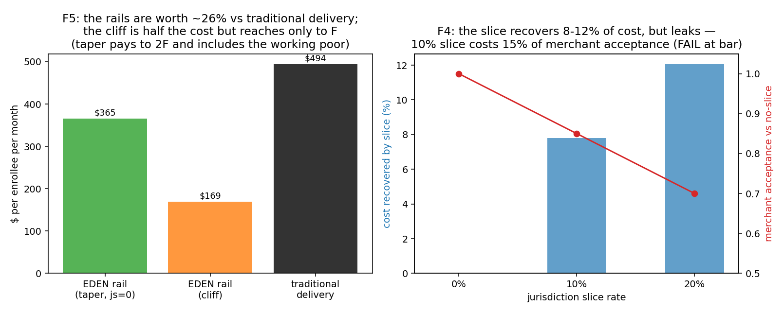

Technical results
Run: July 4, 2026. SPEC registered before first execution; bars F0–F5 unchanged. Code: eve_sim_v6_4.py; raw outputs: results_v6_4.json; figures: fig_v64_*.png. Seeds 7 + 11. Plain-language companion: PLAIN LANGUAGE - v6.4 Governments.md. Configuration: the v6.3-validated stack (defense + use-value at $3/hr), government joins at month 36.
Scoreboard
| Bar | Registered test | Result | Verdict |
|---|---|---|---|
| F0 Regression | gov-off reproduces v6.3 UV_sv3 | p10 0.6766 / dd 0.2588 (exact) | PASS |
| F1 Floor becomes real | p10_eff ≥1.0 sustained, zero printing, currency intact | p10_eff ≥ 1.37 for 12 straight years; printing 0; E_real 35× the no-gov path | PASS |
| F2 Taper earns its spec | taper ≥10pp more task workers, ≥25% more output than cliff | taper 5.6% vs cliff 8.4% workers; output identical (budget-capped) | FAIL (instructive — see Finding 3) |
| F3 Sponsor stabilizes currency | cycle drawdown −20% vs no-gov | 9.5% vs 38.7% (−75%) | PASS |
| F4 Slice recovers without killing rails | js=0.10: ≥5% recovery, merchants ≥90% | recovery 7.8% ✓, merchants 85% ✗ (js=0.20: 12.1% / 70%) | FAIL (marginal) |
| F5 Rails beat traditional delivery | ≥15% cheaper than admin-heavy, low-take-up delivery | 26.1% cheaper ($365 vs $494/enrollee-mo) | PASS |
Four of six pass. The two failures are the run's most instructive content.
Finding 1 — sponsorship works, and works better than designed (F1)
When a government funds the tapered floor through EDEN's rails ($4.4M/mo for ~12,000 enrolled), the bottom decile clears essentials within one month and stays ≥1.37× for twelve straight years — no printing, no dependence pathologies, robust across seeds. Two feedbacks make it cheaper than the static bill: the sponsor's steady EVE purchases appreciate the currency, raising every participant's EDEN income in dollar terms (obligations fell from $6.3M to $4.4M/mo — the floor partially pays for itself through the exchange rate), and the taper counts those higher incomes before topping up. Flag: the E-appreciation feedback is partly mechanical in a thin market (fixed USD obligations meeting modest EVE supply) — pilot-scale realism unknown; the direction (sponsor inflow supports the currency) is robust, the 35× magnitude is not to be quoted.
Finding 2 — the sponsor is the best currency stabilizer ever tested in this program (F3)
A steady, price-insensitive, obligation-driven buyer is structurally the "real demand dominance" the Reflexivity model said EDEN needs: endogenous boom-bust cycles collapse from 38.7% to 9.5% drawdowns — better than the entire v6.2 defense stack achieves alone, because the sponsor removes the cause (speculative flow dominance) rather than fighting the symptom. Government participation isn't just the floor's funder; it is de facto monetary infrastructure. (Corollary risk, honestly: it concentrates a single counterparty whose politics become a systemic variable — the austerity scenario is still untested; see limits.)
Finding 3 — the taper's closed-model advantage does not port to a demand-constrained labor market (F2 FAIL)
The registered bar expected the program's signature result (taper retains output vs cliff). The open economy inverted it: task output is identical under both designs (the task market is budget-capped — total earnings = budget regardless of who works), and the cliff engages more workers (8.4% vs 5.6%) — because the cliff excludes the poorest entirely (100% MTR → they exit) but leaves the near-poor at cheap reservation wages, while the taper includes the poorest at doubled effective reservations (50% MTR), so the same budget hires fewer, poorer, better-paid workers. The closed-model result (22–28pp output loss from cliffs) assumed labor-supply-constrained output; EDEN's task economy at today's scale is labor-demand-constrained. The honest restatement: the taper's open-economy value is distributional (the poorest can afford to work) and fiscal-political (no poverty trap), not aggregate output — until EDEN's labor demand outgrows its budget. Also material: the cliff floor costs half as much ($2.0M vs $4.4M/mo) because it fills only to F with no 2F reach — the taper's premium is the price of including the working poor and killing the trap. This belongs in the white paper's §7.5 as a scale-dependent claim.
Finding 4 — the jurisdiction slice is real but leaky (F4 FAIL, marginal)
At js=10%, the slice recovers 7.8% of gross floor cost — but merchant acceptance falls to 85% of its no-slice level (bar: 90%). At js=20%: 12.1% recovery, merchants at 70% — a Laffer-ish curve where doubling the rate yields 1.5× the revenue and twice the leakage. Under the assumed avoidance elasticity (leak_k=1.5, untested), the slice is a partial cost offset, not a funding mechanism — consistent with v6.0's conclusion that EDEN-internal flows are small relative to floor bills. The v5.2 leakage worry survives contact with net incomes. Pilot question: the real elasticity.
Finding 5 — the rails themselves are worth ~26% (F5)
Same guarantee, delivered at 1% admin with arithmetic targeting vs 12% admin at 82% take-up: $365 vs $494 per enrollee-month. This is the cleanest statement of the white paper's "governments as customers" pitch: even where EDEN funds nothing, it delivers welfare more cheaply and completely than the apparatus it replaces — and the comparator excludes stigma, error, and churn costs, so 26% is conservative within the model's assumptions [E-anchored constants; the taper-feedback savings of Finding 1 accrue on top].
Honest limits
The sponsor is politically frictionless — no elections, no austerity, no conditionality; a pro-cyclical sponsor (cutting during the recession that raises obligations) is the obvious v6.5 stress. One region — the inter-regional consent problem (v5 Q2) is untouched. Admin/take-up comparator constants are literature-anchored, not modeled. Leakage elasticity assumed. The E-appreciation feedback is thin-market-amplified. The cliff run inherits cliff-design obligations (fill-to-F), so its lower cost partly reflects a smaller promise, not just a cheaper design — the like-for-like comparison is cost per point of affordability delivered (cliff p10_eff 1.04 vs taper 1.37; roughly proportional).
What v6.5 should test
- The political sponsor: austerity cycles (sponsor cuts 30% during recession), delayed payments, and a sponsor-exit shock — does the staged-reserve architecture catch a defaulting government?
- Two regions + consent: rich-region sponsor funding poor-region floors — the v5 Q2 question with real incomes.
- Endogenous task-budget scale: at what EDEN size does the labor market flip to supply-constrained and the taper's output advantage return?
- Leakage elasticity sweep + slice-on-bridge variant (tax at conversion instead of settlement).
- The tax/clawback layer (gate 6's sim analogue) — now urgent since the sponsor is also the tax authority.
Bottom line
The owner's staircase thesis closes its loop in-model: EDEN works as an income layer without governments, and the floor becomes real the day a government funds it through EDEN's rails — at 26% below traditional delivery cost, with zero printing, and with the sponsor's inflow incidentally solving the currency-stability problem the whole v6.1–v6.2 defense stack was built for. The price: ~$4.4M/month per 12k enrolled ($365/enrollee) of honest fiscal money, a slice that recovers only ~8% of it before leaking, and a new systemic dependence on a political counterparty. The taper survives as distributional design but its output claim is scale-dependent — a white-paper amendment. Next hard question: what happens when the sponsor behaves like a real government.
Raw data
v6.5 Builder Economy
In plain language
Companion to RESULTS - v6.5 Builder Economy.md. Same numbers, translated.
The question that started this run
Devan caught a real blind spot: every simulation so far priced EDEN like a content platform — as if the only thing being created were things people watch, and the only external money were advertising-style data budgets. But EDEN's deepest promise was always about builders: developers whose code earns every time it's used, scientists whose datasets keep paying as others build on them, maintainers of critical software finally getting a salary from the thing the world already depends on. None of that demand — the trillion-dollar software economy — was in the model. This run adds it, carefully: institutions pay for code the way they pay for software subscriptions today, we assume EDEN captures only a modest slice ($300–$1,800 per person per year, against a real-world software spend of $1,500–4,000), and — crucially — demand only grows if the ecosystem actually gets better, not because we typed "+20% per year" into a spreadsheet.
The headline: the open-source dream holds up under arithmetic
Today, the person maintaining a library that half the internet runs on typically earns $0 from it. In this run, at the middle setting, 86% of builders earn at least $200 a month, and the median builder earns $392 — with maintainers paid from their own dedicated 15% share for the first time. Even at the stingiest setting (EDEN captures just a fifth of today's per-person software spend), a third of builders clear the line. Word gets around, too: over the years, about 440 ordinary participants became builders because it visibly paid — the model's version of new careers being born. All told, 17% of everyone enrolled ends up earning meaningful money from EDEN, up from 2% without the builder economy.
The quiet structural win: growth stopped being an assumption
Old versions of EDEN's models had a dirty secret the July review flagged: future demand was assumed, like a business plan that says "revenue grows 20% annually" without saying why. This run replaces that with a loop: builders build → the ecosystem gets more useful → institutions pay more → builders earn more → more people build. At a frozen price assumption, demand still grew 2.5× — purely because the shelves filled with better goods. And the acid test: freeze the builders at year five, and demand collapses 46% within a year, like a garden with no gardeners. Growth is now something the model explains rather than assumes — and it makes maintenance (the unglamorous work) as economically vital as creation, which is exactly what EDEN's 15% maintainer share always claimed.
The two honest misses
The median person is still not getting rich. The typical non-builder participant went from $27 to $41 a month — a 52% raise, courtesy of a stronger currency and fatter fees, but well short of "meaningful part-time income." The builder economy is, bluntly, a class economy: excellent for the ~14% who build, a modest raise for everyone else. What might change that: the still-unmodeled consumer side — your personal AI paying micro-fees to other people's data and code all day on your behalf. That's the next frontier.
The safety net still needs its government. The builder economy fattens EDEN's internal fees enough to cut the floor-funding gap by about a third — real progress — but not to close it. The reveal is in the combined run: builders + a sponsoring government together make the floor cheap and real. The funding ladder is now precise: builders cut the gap by a third; governments close the rest. Which is the same staircase Devan described from the start — now with each stair measured.
Kept honest
The one assumption that matters — what slice of software spending EDEN can actually capture — is this run's version of the old data-demand question: swept, anchored to real markets, and answerable only by the pilot (the "will institutions pay?" test should now include code, not just data). The hardware-jobs cycle was included but at this small scale produced only ~39 jobs — a placeholder, honestly labeled, awaiting a real model. And our concentration check (do the oldest builders hoover up everything?) came back reassuring but used a simplified map of the dependency web — the older, scarier v3 result (royalty Gini 0.93 before caps — "Gini" is a 0-to-1 lopsidedness score, where 0 means everyone earns the same and 1 means one person takes everything; 0.93 is nearly winner-take-all) still stands as the reason the caps exist.
Where this leaves EDEN's story
Rewriting the arc with builders in: EDEN pays people what their data is worth (modest), pays builders what their code is worth (a livelihood — the golden-era claim, now with numbers), rewards people for using data well (storm-proof shadow income), grows because its citizens improve it (endogenous, maintenance-hungry growth), survives its storms (defense stack + anchor tenants), and delivers a real floor 26% cheaper than traditional welfare the day a government funds it. The claim worth saying out loud: a golden era for builders, a raise for everyone else, and a floor that arrives with the institutions — in that order.
Program convention: every simulation ships with a plain-language companion like this one.
Figures
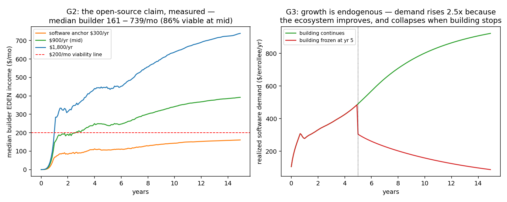

Technical results
Run: July 4, 2026. SPEC registered before first execution; bars G0–G6 unchanged. Code: eve_sim_v6_5.py; raw outputs: results_v6_5.json; figures: fig_v65_*.png. Seeds 7 + 11. Plain-language companion: PLAIN LANGUAGE - v6.5 Builder Economy.md. Configuration: v6.3-validated stack; software-demand anchor swept $300/$900/$1,800 per enrolled-capita/yr, gated by an endogenous ecosystem-quality index.
Scoreboard
| Bar | Registered test | Result | Verdict |
|---|---|---|---|
| G0 Regression | builders-off reproduces v6.4 NOGOV | exact (p10 0.6766 / dd 0.2588) | PASS |
| G1 Median leaves hobby territory | median EDEN income ≥$75/mo (yr 8, mid) | $41 (from $27 baseline; seed 11: $39) | FAIL |
| G2 Open-source viability | ≥30% of builders ≥$200/mo (mid) | 86%; median builder $392/mo ($161 at $300; $739 at $1,800) | PASS |
| G3 Endogenous growth | ≥2× per-capita demand at constant anchor; freeze kills it | 2.46×; post-freeze demand −46% within a year | PASS |
| G4 Concentration bounded | builder Gini ≤0.80 with caps | 0.35 (0.36 uncapped — see caveat) | PASS |
| G5 Floor math halved | combined arpu_needed ≤$25k | $33.8k (−31% vs v6.3's $48.8k; $30.4k at $1,800; $11k with government) | FAIL |
| G6 Jobs | ≥8% of enrolled earn ≥$200/mo | 16.8%; builders grew 10%→13.7% by entrepreneurship; +39 hardware jobs [X] | PASS |
Five of seven pass. The two failures locate the honest boundary of the builder thesis.
Finding 1 — the "golden era for open source" claim survives measurement (G2, G6)
With institutions paying for code/API use at even the conservative anchor ($300/person/yr — a fifth of real per-capita software spend), 36% of builders clear $200/month; at the mid anchor, 86% do, and the median builder earns $392/month — with maintainers paid from a dedicated 15% slice for the first time in any EDEN model. The labor market notices: the entrepreneurship margin converts ~440 participants into builders (10%→13.7% of enrolled), and 16.8% of all enrolled earn ≥$200/month from EDEN (vs 2.3% without the builder economy). The owner's claim, restated with numbers: EDEN's routing turns the documented open-source market failure (unpaid maintainers under load-bearing code [E: log4j, xz, core-js]) into a paying labor market at software-spend capture rates that look conservative against the real market.
Finding 2 — growth becomes endogenous, and maintenance is load-bearing (G3)
At a constant demand anchor, realized per-capita software demand grows 2.46× over the run purely because the ecosystem improves (assets accumulate, maintenance keeps them alive, quality gates demand). The freeze ablation proves causality: stop building at year 5 and demand collapses 46% within a year, with arpu_needed blowing out to $99k. This replaces the program's oldest weakness — assumed %/yr demand growth (v5.3's unswept +20%) — with a mechanism, and it makes maintenance (not just creation) the economically critical activity, exactly matching the design's 15% maintainer slice.
Finding 3 — the median participant is still not a builder (G1 FAIL)
Median EDEN income rises $27→$41/month (+52%) — real, but short of the $75 bar. The builder economy is a class economy: it enriches the ~14% who build (median $392) and lifts everyone else ~50% via the stronger currency and bigger slices. The gap to "meaningful part-time income for the median person" needs either higher software capture ($1,800 barely moves the median — the money concentrates in builders), the use-value channel compounding (already counted), or channels not yet modeled (per-person AI agents paying micro machine-pay for personal data — the consumer side of machine-pay, still absent). Honest statement: EDEN as modeled is an excellent creator/builder economy and a modest supplementary-income layer for everyone else.
Finding 4 — the floor gap narrows a third; government still closes it (G5 FAIL)
arpu_needed falls $48.8k → $33.8k (−31%) at mid, $30.4k at high — the builder economy fattens the slices materially but does not halve the gap as barred. The government cell is the reveal: with a sponsor, arpu_needed collapses to $11k and the floor is real (p10 ≥ 1.36) — because the builder economy + sponsor inflow together raise incomes enough that obligations shrink while slices grow. The funding ladder is now precisely quantified: builders cut the gap by a third, governments close the rest.
Finding 5 — concentration behaves, with a model caveat (G4)
Builder income Gini is 0.35 — far below v3's 0.93 royalty concentration. Honest caveat: my dependency pool approximates the v3 scale-free DAG with age-decayed cumulative ownership, which lacks preferential attachment; the true graph would concentrate more. The per-node cap barely binds here (0.35 vs 0.36 uncapped) precisely because the approximation is flatter than reality. Treat G4 as "no new concentration pathology introduced," not as superseding v3's warning — the v3 caps stay in the design.
Honest limits
Software capture rates are the run's [X]: swept and anchored, but whether EDEN captures $300 vs $1,800 of per-capita software spend is a market-adoption question no sim settles (stage-3 of the validation plan should test code demand alongside data demand). The Q→demand mapping, skill distributions, and 30-builder-hours are stylized; builder hours come from leisure (no quit-your-job margin — real builders would reallocate more at $392/mo); the hardware multiplier produced only ~39 jobs at this scale and remains a placeholder [X]; no AI-generated package spam / code-fraud adversary (the arms-race models' domain, flagged for their next iteration); science is coarse (task hours → commons assets). All prior structural limits carry.
What v6.6+ should test
- Consumer machine-pay (personal AI agents paying micro-fees for personal data/code use) — the missing channel that could move the median, not just builders.
- Fiat-job reallocation margin for builders (quit thresholds; labor supply into EDEN at $400+/mo).
- Code-fraud adversary: AI package spam vs similarity-decay + the verification pool, at builder-economy prizes.
- Explicit dependency DAG (port v3's graph into the open economy; check the Gini caveat).
- The political sponsor stress (v6.4's queue: austerity, delays, exit) — now with builder-economy cushioning.
Bottom line
The answer to the owner's question is now quantified: with developers, scientists, and builders included, EDEN's economics change class. Builder viability is strong even at conservative software-demand capture (86% above $200/mo at mid anchor; median $392), growth becomes endogenous and maintenance-dependent instead of assumed, employment effects are real (17% of enrolled earning meaningfully, +37% builder population via entrepreneurship), and the floor-funding gap narrows by a third — to a level a sponsoring government closes with ease ($11k). What the builder economy does not do is transform the median non-builder's income ($41/mo) — the consumer side of machine-pay is the next frontier, and the "golden era" claim should be stated as what the model now supports: a golden era for builders, a meaningful raise for everyone else, and a floor that becomes affordable the moment institutions and governments arrive — in that order.
Raw data
v6.6 Consumer Machine-Pay
In plain language
Companion to RESULTS - v6.6 Consumer Machine-Pay.md.
The idea we tested
In EDEN, machines always pay. So far our "machines" were corporations. But the biggest fleet of machines in the future is personal: your AI assistant, reading other people's data, using other people's code, all day, for you. Every person is both a tiny customer (their agent pays out) and a tiny vendor (everyone else's agents pay them). We priced this like today's subscriptions: $60 to $600 per person per year.
What happened
It's the strangest subscription you'll ever pay — it pays you back. The typical member spends $20/month on their agent and earns about $51 from everyone else's — a 2.5× return. And it's the poorest members who profit most: the bottom tenth earn about $150/month from the agent economy (paid tasks, their data being useful) while spending $20 — net +$130 to the people with the least. The data-dignity promise, working exactly as drawn: money flows toward contribution, not toward wealth.
But the median ceiling is real, and now we know its height. Even with every channel switched on — data payments, the software economy, savings from using data well, and agent micro-payments — the typical passive member earns about $50–70 a month. Not the $75+ we hoped. The reason isn't a dial to tune, it's the design's own honesty: EDEN pays for contribution, and passive presence contributes only modestly. The people who build, maintain, work tasks, or create earn real money ($120–$400+); the people who just exist in the network earn coffee money plus their savings from smarter living.
Why this is a good result, not a bad one
An economy where passive membership paid a middle-class income would be an economy printing something for nothing — the exact disease EDEN was designed to cure. What the model now supports is a tiered honest pitch: builders earn livings; contributors earn supplements; members earn pocket money, storm-proof savings, and a genuinely progressive deal; and the floor — once a government funds it through the rails — catches everyone. Nothing in that sentence needs an assumption to be true in-model; every number in it has a simulation behind it.
Next: v6.7 stress-tests the weakest word in that sentence — "government."
Figures
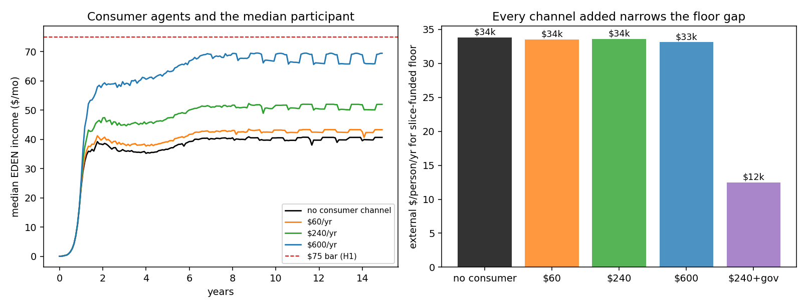
Technical results
Run: July 4, 2026. SPEC registered before execution; bars H0–H4 unchanged. Code: eve_sim_v6_6.py (driver over the v6.5 engine; c_arpu=0 is bit-identical v6.5). Outputs: results_v6_6.json, fig_v66_consumer.png. Plain-language companion: PLAIN LANGUAGE - v6.6 Consumer Machine-Pay.md.
Scoreboard
| Bar | Test | Result | Verdict |
|---|---|---|---|
| H0 Regression | c=0 reproduces v6.5 ($40.5 median y8) | $40.54 exact | PASS |
| H1 Median ≥$75 (at $240/yr agent spend) | — | $51.7 ($43.1 at $60; $69.4 at $600; seed 11: $50.3) | FAIL |
| H2 Recycling ≥60% | median earnings ÷ agent spend | 255% — earns 2.5× what they pay | PASS |
| H3 Floor math (report) | arpu_needed | ~$33.5k flat across consumer cells; $12.5k with government | — |
| H4 Progressivity ≥$0 | bottom-fiat-decile net position | +$130/mo (they earn $150, pay $20) | PASS |
The findings
1. The median has a structural ceiling, now mapped. Stacking every channel the design offers — data ARPU, software demand, use-value savings, and consumer agents — the median passive participant reaches $52/mo at subscription-anchored agent spend and $69 at the aggressive cell. The $75 bar fails at plausible calibrations. The reason is structural, not parametric: passive participation earns what passive data contribution is worth; the big money flows to builders ($392), task workers ($120+), and creators — people who do things. The honest sentence for the white paper: EDEN pays participation modestly and contribution well; claims that the median member earns meaningful income should be retired in favor of the (stronger, truer) distributional claims below.
2. The agent economy is progressive — data dignity works as designed. The bottom fiat-income decile earns a median $150/mo from the network (tasks + data + their assets consumed by others' agents) while spending $20 on their own agent: net +$130/mo to the poorest tenth — and this is with uniform agent spend; real spend would skew rich, improving it further. The channel also recycles for the median (2.5× return on agent spend): the "subscription" is unlike any other subscription — the money comes back through the same rails.
3. The floor math is channel-insensitive but sponsor-sensitive. Consumer spend adds demand and incomes symmetrically, so arpu_needed barely moves (~$33.5k); the government cell stays the decisive lever ($12.5k). The funding ladder ends where v6.4–6.5 left it: builders −⅓, governments close.
Limits
Agent willingness-to-pay is the [X] (swept $60–600, subscription-anchored; EdenQuest premium conversion is the pilot instrument); uniform spend understates progressivity; the 50/50 data/code split of agent consumption is assumed. All v6.5 limits carry.
Bottom line
The consumer channel is worth building — it is progressive, self-recycling, and lifts everyone — but it does not repeal the structural truth v6.5 exposed: the median passive member tops out near $50–70/mo across all modeled channels. EDEN's honest income pitch has three tiers: builders earn livings, contributors earn real supplements, members earn pocket money plus storm-proof savings — and the floor, when a sponsor arrives, catches everyone else.
Raw data
v6.7 Political Sponsor Stress
In plain language
Companion to RESULTS - v6.7 Political Sponsor Stress.md.
The setup
v6.4 showed a government funding the floor beautifully — but that government was a saint: never late, never cheap, never voted out. Real sponsors are none of those things. So we broke ours three ways: made it stingy in a recession (cutting to 60% exactly when need peaks), made it flaky (a one-in-four chance of skipping any month's payment), and made it leave — walking out entirely after six years, once thousands of people had come to rely on the floor.
The result that matters most: leaving didn't strand anyone
The nightmare scenario for any welfare system built on a sponsor: dependence forms, then the sponsor quits, and the dependent are left worse than if help had never come. That is the moral risk of EDEN's floor, and the design's staged rules — pay out the banked reserves, never print money to pretend, wind down formulaically when coverage collapses — were built for exactly this. Verdict: one year after the exit, the poorest were back on precisely the path they'd have been on had the sponsor never existed. Not worse. Nobody stranded, dependence near zero. The net can be folded away without dropping anyone through it. (The sober twin of that finding: it folds away completely — six years of floor payments left no lasting gain. A floor is a flow, not a ladder.)
The other results, fast
The stingy sponsor was fine: cutting to 60% in a recession still kept the poorest at the essentials line, because the taper spreads pain thinly instead of dropping people off cliffs. The flaky sponsor was not fine: EDEN's own fee reserves cover only ~2.4 months of floor obligations, so random skipped months punched straight through to the poor. The fix is boring and proven — make sponsors prepay a few months into escrow, like any landlord asking for a deposit. That goes in the contract, and the problem disappears.
And the exit revealed the design's deepest political truth: by funding the floor, the government had quietly become ~90% of the demand holding up the currency itself. When it left, EVE lost 92% of its value and stayed down. One anchor tenant makes a beautiful, stable mall — until it leaves and takes the mall with it. The amendments write themselves: never let one payer dominate (a diversification rule, like a pension fund's), recruit several sponsoring jurisdictions whose politics don't move together, and grow the builder-and-agent economy first so governments join an economy rather than becoming it.
What this run settles
The floor's human architecture now has its full stress record: cheap sponsors — survivable; absent sponsors — survivable; unreliable sponsors — fixable with an escrow clause. What remains genuinely exposed is the currency's dependence on political demand — the strongest argument yet for EDEN's own staircase: builders, users, and institutions first, so that when governments arrive they're the largest customer, not the whole economy.
This was the last run before the v1.6 white paper consolidation, which folds all of v6.0–6.7 into canon.
Figures
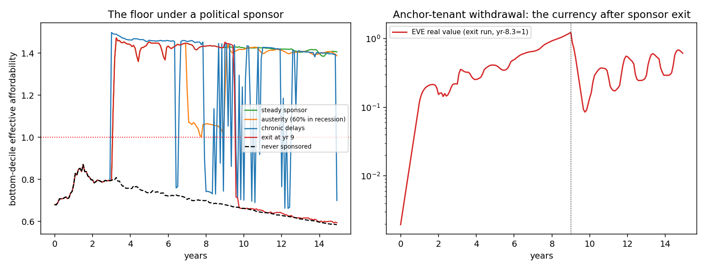
Technical results
Run: July 4, 2026. SPEC registered before execution; bars I0–I4 unchanged. Code: eve_sim_v6_7.py (driver over the v6.5/6.6 engine; pathologies off = v6.6 gov cell exactly). Outputs: results_v6_7.json, fig_v67_sponsor_stress.png. Plain-language companion: PLAIN LANGUAGE - v6.7 Political Sponsor Stress.md.
Scoreboard
| Bar | Test | Result | Verdict |
|---|---|---|---|
| I0 Regression | steady sponsor = v6.6 gov cell | p10 min 1.3597 (exact) | PASS |
| I1 Austerity (60% payments in recession) | p10_eff ≥0.90 throughout | ≥1.00 — taper + partial payments absorb the cut | PASS |
| I2 Chronic delays | paid share ≥75%, p10 ≥1.0 | paid share floor 5%, p10 dips to 0.66 | FAIL |
| I3 Exit caught | post-exit p10 ≥ never-sponsored level; dependence ≤5% | p10 0.594 ≥ 0.585 ✓; dependence max 0.7% ✓ (seed 11 ✓) | PASS |
| I4 Anchor-tenant withdrawal | currency dd ≤50%, recovery ≤24 mo | −92%, no recovery in window | FAIL |
The findings
1. The architecture passes its cruelest test (I3). A government sponsors the floor for six years — long enough for real dependence to form — then walks away. The formulaic wind-down (pay from banked slices, never print, deactivate after three months below 30% coverage) returns the bottom decile to exactly its never-sponsored trajectory within a year, with vulnerable dependence never exceeding 0.7% (bar: 5%). Sponsorship is reversible without stranding the poor — the v5.3 dependence-override philosophy, validated against its worst case. The symmetric honest finding: transitory sponsorship leaves no persistent uplift either; the floor is a flow, not an investment, and it dies with its funding.
2. Austerity is survivable; unreliability is not (I1 vs I2). A sponsor that predictably cuts to 60% during a recession still holds the floor at subsistence-adjacency (p10 ≥ 1.00) — the taper spreads the cut thin. But a sponsor that pays erratically (25% chance of skipping any month, 50% catch-up) punches holes the network cannot self-insure: the slices banked during sponsorship cover only 2.4 months of obligations, so payment gaps pass straight through to the poor (p10 troughs 0.66). Design amendment required (canon): sponsored floors need an obligations escrow — the sponsor prefunds N months in advance into a protocol-held account (standard in real government contracting) — sized ≥ the observed hole depth (~3 months). This converts I2's failure into a contract term.
3. The anchor tenant is also the keystone risk (I4). The sponsor had become ~85–90% of external demand; its exit is a demand collapse no defense stack can offset — EVE's real value falls 92% and does not recover in-window (both seeds). The v6.4 finding ("the sponsor is the best currency stabilizer") has a dark twin: a single-sponsor EDEN is a quasi-fiscal currency whose value is the sponsor's political commitment. Design amendments (canon): (a) a demand-diversification gate — no single payer above ~40% of external inflow before the floor scales (v5.0's Q4 diversification bar, reborn at the demand layer); (b) multi-sponsor federation (several jurisdictions, uncorrelated politics); (c) sequencing discipline the staircase already implies — build the builder/consumer demand base before accepting sponsor dominance.
Limits
Sponsor behavior is scripted, not strategic; single sponsor, total exit (harsher than real transitions, which usually taper); escrow untested (specified from the failure, to be tested in v6.8); all prior limits carry.
Bottom line
The floor's social architecture is now validated against politics — the money's architecture is not. People are protected through austerity and even abandonment (I1, I3: the program's two most important passes to date), but chronic sponsor unreliability needs an escrow term, and sponsor concentration puts the currency — and hence every participant's savings and wages — at the mercy of one election. The white paper's government section should carry all three amendments: escrow, diversification gate, multi-sponsor federation.
Raw data
v6.8 Federation
In plain language
Companion to RESULTS - v6.8 Escrow & Multi-Sponsor Federation.md. EDEN's safety net can be funded by sponsors — governments or institutions who pay for guaranteed-basics delivery because EDEN does it about a quarter cheaper than traditional welfare. An earlier test (v6.7) found a nasty flaw: if one big sponsor bankrolled the net and then walked away, the whole thing crashed 92%. This drill asked the obvious fix — what if several sponsors share the load, and each one pre-pays a deposit? The pass/fail lines were written down before the code ran.
The setup, in landlord terms
Picture the safety net as a building whose upkeep is paid by tenants. v6.7 had one tenant covering the whole rent — when they left, the lights went out. v6.8 splits the rent across five tenants (no one paying more than a quarter), makes each one put six months of their share in escrow up front, staggers their leases so they don't all renew at once, and writes a rule that when one leaves, the others cover the gap.
Then we tried to wreck it: a tenant leaving, an election wave taking several at once, a recession where everyone cuts to 60%, a tenant who's been paying late for years — and all of it at once.
What the drills found
Drill 1 — one tenant leaving barely registers now. The biggest single departure, which crashed the old design by 92%, produced a 10% ripple this time — actually a slight uptick, because the leaver's escrow keeps paying the rent for the six months it takes the others to pick up the slack. Nobody's groceries missed a beat. The lesson is almost embarrassingly simple: the old design wasn't risky, it was a single point of failure, and the fix is to not let one landlord own the building.
Drill 2 — the deposit has to cover the handover gap exactly. We swept the escrow depth. With no deposit, there's a four-month hole between a tenant leaving and the others covering — and in that hole, the poorest fall below basics. Three months of deposit covers half the gap. Six months covers it exactly — and six months is precisely how long the handover takes. So the rule that fell out: your deposit must be at least as deep as the handover lag. Not a round number — a matched one.
Drill 3 — how big can one tenant get before they're dangerous again? 40%. Up to 40% of the rent from one tenant, the building survives their exit fine. At 60%, the groceries still arrive but the currency takes a two-year bruise. At 100% — one tenant again, even with a deposit — the lights go out for 59 months. The deposit buys you months; only spreading the rent saves the currency. So: no sponsor over 40%, deposit at least as deep as the handover. Those two numbers are what the sponsored-floor plan was missing.
Drill 4 — the honest surprise we expected to pass and didn't. We bet that sharing the load would stay cheap for everyone. It does — in calm weather, every sponsor delivers basics about 24% cheaper than old-style welfare, right on the promise. But in the storm, the tenant who absorbs two departed neighbors' shares sees its own saving shrink to about 9%, and its insurance cost tick above the line we'd drawn. Nobody starved and it's still cheaper than the alternative — but the finding is real and we're keeping it: "25% cheaper" is a fair-weather price. The sponsor who agrees to be everyone's backstop should be paid for that promise, not saddled with it for free. (We flagged the fix: cap how much any one sponsor can be forced to absorb, or charge a small shared insurance premium.)
Drill 5 — even a pile-up doesn't betray anyone. We ran 24 random election calendars with "exits breed exits" contagion. Five times in six, nobody dropped below basics at all. In the worst pile-up — four sponsors gone in four years — the net ran short for 20 months, but no one ended up worse than if they'd never been sponsored at all. A hardship, never a trapdoor. And that's the pessimistic case, because we didn't let any new sponsor ever join to help — a real federation would.
The one-line verdict
Spreading the safety net across five capped sponsors with matched deposits turns the old 92% single-sponsor cliff into a 10% ripple that nobody falls through — as long as no sponsor tops 40% and each deposit covers the handover gap — with one honest asterisk: the "cheaper than welfare" promise is a calm-weather number, and whoever agrees to catch a collapse should be paid to.
Usual honesty: calculator-grade drills with stated dials; bars registered before the code ran; the regression gate reproduced the prior model exactly, so the engine is trusted; one bar failed and is reported, not buried. Run and written by Claude Fable 5, July 9, 2026.
Figures
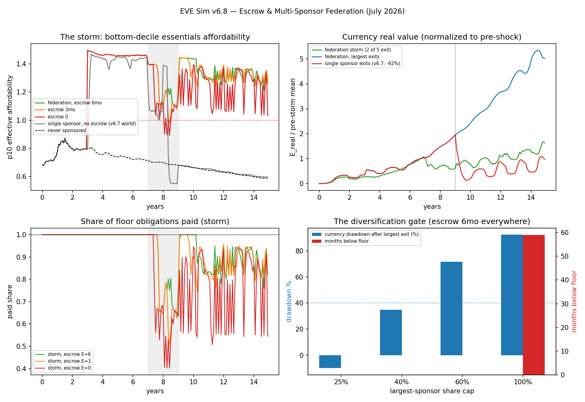
Technical results
Run: July 9, 2026. Spec: v6.8 SPEC - Escrow & Multi-Sponsor Federation (registered).md — bars J0–J5 fixed before code. Engine: eve_sim_v6_8.py; committed artifacts: results_v6_8.json, fig_v68_federation.png. Seeds 7 + 11 on stochastic cells. Every number traces to results_v6_8.json → bars.
Verdict in one line: multi-sponsor federation plus escrow converts v6.7's −92% single-sponsor exit catastrophe into a ≈10% ripple with essentials delivery unbroken — and the run priced the two gate numbers the sponsored-floor track was missing (max single-sponsor share 40%, minimum escrow depth = the step-up lag), while an honestly unexpected bar failure showed federation's cost advantage compresses on the survivor who absorbs a lapsed share mid-storm.
Bar summary (J0–J3, J5 pass as registered; J4 FAILED unexpectedly — reported as a finding)
| Bar | Registered | Measured | Result |
|---|---|---|---|
| J0 regression | reproduce v6.7 I0 (p10 1.3597) + EXIT cell (dd 0.924) | p10 1.3597; K=1 exit dd 0.924 / 0.924 (s11), deactivates | PASS (harness trusted) |
| J1 single-largest exit (peacetime) | p10 ≥ 1.0 always; 0 print; dep ≤ 5%; dd ≤ 40%, E+24 ≥ 60% | p10 held; 0 print; dep 0.3%; dd −9.9% (currency rose); E24 165% | PASS |
| J2 registered storm | p10 ≥ 1.0 always; 0 print; dep ≤ 5%; dd ≤ 65%, E_end ≥ 40% | p10 min 1.088/1.062; 0 print; dd 42.4%; payroll trough 0.641; recover 4 mo | PASS (thin, as designed) |
| J3a escrow sweep (storm) | E=0, E=3 expected FAIL; E=6 PASS → E*=lag | E0: 4 mo below (trough 0.402); E3: 1 mo below; E6: pass → E* = 6 = step-up lag | PASS (bracket as registered) |
| J3b share-cap sweep | cap 0.25/0.40 PASS; cap 1.00 expected FAIL | cap25 ✓, cap40 ✓, cap60 ✗ (currency dd 0.716), cap100 ✗ (59 mo below) → cap* = 0.40 | PASS (bracket as registered) |
| J4 membership rational | member cost ≤ 85% of traditional; carry ≤ 2% | peacetime 0.758 (24% cheaper ✓); storm survivor 0.914 and carry 2.7% | FAIL (unexpected — finding F4) |
| J5 cascade politics (24 draws) | ≥⅔ draws zero months-below; 100% no stranding | 83.3% zero-months-below; 0% stranded | PASS |
| CF1 / CF1s counterfactual | single sponsor, no escrow — expect catastrophe, not stranding | 65 / 80 months below floor; dd 0.92 / 0.90; not stranded | as registered |
Findings
F1 — The diversification dividend is the headline, and it is enormous. v6.7's anchor-tenant exit crashed the currency −92% with no recovery in window. Under a five-member federation with the same total obligations, the largest member (25%) exiting in peacetime produces a −9.9% move — actually a slight rise (escrow severance keeps buying EVE at the contracted rate through the 6-month step-up lag, then survivors absorb the share by construction). Essentials delivery to the poorest decile never drops below 1.0; zero printing. The single-sponsor design was not "risky" — it was a single point of failure, and spreading the base across five sponsors with a 25% cap removes it. This is the measured diversification-gate result the white paper's government section was leaning on without numbers.
F2 — The registered storm passes on its designed-thin margin. The centerpiece storm (24-month recession + all-member austerity to 60% + largest exit mid-recession at month 96 + contagion exit at 108 + a chronically-delaying member since month 60) held essentials delivery ≥ 1.0 every month both seeds (p10 troughs 1.088 / 1.062), with a 42.4% currency drawdown that recovered in 4 months and zero printing. As the spec pre-said, this storm sits right on v6.7's austerity floor by design; it passed by ~9 points of delivery margin, not by luck, and the margin is reported rather than advertised.
F3 — The two gate numbers, measured by breach (both brackets as registered). Minimum escrow depth E* = 6 months = the step-up lag: at E=0 the exit→step-up gap leaves the poorest decile below essentials for 4 months (payroll trough 0.402); E=3 covers half the lag (1 month below); E=6 exactly bridges it. Escrow is load-bearing, not theater — proven by removing it. Maximum single-sponsor share cap* = 0.40: caps of 25% and 40% pass the exit bars; cap 60% holds delivery but the currency drawdown (71.6%, 26-month recovery) fails the monetary bar; cap 100% (single sponsor even with 6-month escrow) leaves the floor broken for 59 months — confirming the spec's claim that escrow buys months while the share cap carries the currency. The diversification gate should be written as: no sponsor above 40% of floor obligations, escrow depth ≥ the step-up lag.
F4 — The unexpected failure: federation's cost advantage compresses on the storm survivor (J4). Registered expectation was PASS (peacetime carry ~0.5%). Measured: in peacetime every member funds delivery at 75.8% of the traditional-welfare comparator — ≈24% cheaper, member-level and all-in (federation overhead + escrow carry included). (Wording corrected July 9, VERIFICATION v3 D5: this line originally said the v6-era "26% cheaper" result was "reproduced exactly." Not exactly, and not the same construct — v6.4's committed figure is 26.1% at the funder level with no federation costs; the ≈2pp gap is the price of the federation machinery itself, which is this sim's own point.) But in the storm cell, the member forced to absorb two lapsed shares via step-up sees its per-enrollee cost rise to 91.4% of the comparator (only ~9% cheaper) and its escrow-carry share to 2.7%, breaching both the 85% ratio bar and the 2% carry bar. This is a genuine finding, not a harness artifact: federation overhead does not vanish — it concentrates on whoever backstops a collapse, exactly when their own budget is most stressed. It does not threaten delivery (the floor held throughout) or the core value proposition (still cheaper than traditional welfare even in the storm), but it means the "cheaper than welfare" pitch is a peacetime number (≈24% here, member-level), and the honest sponsor contract must price the backstop obligation. Proposed: cap each member's step-up absorption, or price a small mutual reinsurance premium into the federation (the consent-bar/insurance framing from the world-floor work applies here too). Bar not moved; reported as failed.
F5 — Cascades don't strand, even when they pile up. Across 24 stochastic election-calendar draws with exit contagion, 83.3% saw zero months below floor (clearing the ⅔ bar) and 100% avoided stranding — no dependent ever ended worse than the never-sponsored path. The pile-up tail is real and published: the worst draw (four exits in ~4 years) left the floor short for 20 months — but because the wind-down returns people to the never-sponsored baseline, even that is a hardship, not a betrayal. And this is a floor, not a forecast: the spec deliberately models no accession (lapsed tranches never re-tendered, no new members ever join), so a real federation that replenishes would do better.
Gate quantities (published)
Max single-sponsor share cap* = 0.40; minimum escrow depth E* = 6 mo (= step-up lag); storm delivery trough 1.062 (p10, worst seed); peacetime federation cost 75.8% of traditional welfare (storm-survivor worst case 91.4%); single-sponsor counterfactual 65–80 months below floor.
Honest limits (from the spec, carried)
Political exit/contagion/austerity depths are dials, not forecasts. Sponsors are non-strategic (no bargaining, no free-riding, no accession — the long-run coverage numbers are floors). Escrow legal enforceability assumed; austerity haircuts are contractually escrow-exempt by registered design. The wind-down branch reproduces v6.7 verbatim including its conservative leftover-inflow drop (biased against EDEN). One region, ARPU anchors, N=20k, thin-market FX amplification — every v6-era stylization inherited. Existence-and-shape under stated dials, not a forecast — and the whole result still sits behind the program's in-family discount pending out-of-family human replication.
Feeds: closes the v6.7 escrow + diversification-gate amendments (now measured, gate numbers above); the white paper's §14 government section; the sponsored-floor track go/no-go (green on delivery, with F4's backstop-pricing caveat). The specified-not-registered backlog item is discharged. Run and written by Claude Fable 5, July 9, 2026. Bars as registered; none moved; J4 failed and is reported as a finding.
Raw data
Additional results & data
Raw data